neper
Readiness
Charting engine
Chart capability L061: 96% complete. Foundation in `lib/e/gfx/chart.e` covers borrowed numeric columns and caller-owned scatter/line/bar/step marks, area polygons, lollipop stems and center/lower/upper error bars, plus histogram bins, sorted ECDF, R7 box plots, Gaussian density, normal Q-Q and mirrored-KDE violin. Confidence bands close ordered lower/upper columns into a caller-owned polygon; horizontal dumbbells emit paired endpoints and their connecting segments. `gfx_chart_intervals` checks geometry, scene/SVG commands, containment, ordering and capacity refusals on Windows and Linux. Cartesian `Spec` supports independent linear, log10, symmetric-log and reverse x/y scales; `ticks` emits caller-owned values/positions and `e.gfx.chart.scene` draws grid, axis and tick strokes. `nice_ticks` selects 1/2/5 linear steps and 1/2/5 log-decade candidates, with symmetric-log retaining equal transformed-space positions; `format_ticks` writes shortest-round-trip f32 labels into caller-owned storage and refuses an empty buffer without trapping. `gfx_chart_nice_ticks` checks linear/log/symmetric-log/reverse breaks, labels and refusal paths on Windows and Linux. `guide_labels` positions tick strings in caller-owned metadata, while scene text reuses `e.text.layout` and a registered TrueType font and SVG streams escaped `<text>`; `gfx_chart_labels` checks alignment, title escaping and refusals on Windows and Linux. Row-major heatmaps, Pearson correlation matrices and equal-panel facet geometry emit caller-owned cells/rectangles. `layout_with_limits` borrows optional x/y domains for shared or free facet scales, rejecting limits that exclude the data or baseline; `gfx_chart_facet` covers the geometry and refusal paths. `e.gfx.chart.svg` streams solid-colour marks, matrix tiles and guides with escaped accessible metadata and colours matching current CPU scene channel packing. `gfx_chart`, `gfx_chart_qq`, `gfx_chart_matrix`, `gfx_chart_cartesian`, `gfx_chart_scale`, `gfx_chart_facet`, `gfx_chart_intervals`, `gfx_chart_labels`, `gfx_chart_nice_ticks` and `gfx_chart_svg` check geometry, statistics, scales, scene/SVG commands and refusal paths; `examples/chart_gallery.e` rendered one hundred and seventeen inspected PNG previews and one hundred and seventeen XML-parsed SVG companions in `docs/chart-previews/`, including labeled linear, log and symmetric-log examples. Detailed registry and staged plan: `docs/charting-engine-plan.md`. Category-major `grouped_bars` and `stacked_bars` reuse per-series Bar layouts for grouped, signed-stacked and 100%-stacked rectangles; `gfx_chart_composition` checks geometry, scene/SVG commands and refusal paths on Windows and Linux. `category_ticks` supplies ordinal centers for the existing label pass and `legend_items` pairs caller-owned swatch geometry with borrowed series names; `gfx_chart_composition` checks placement, escaping, scene/SVG output and refusals on both hosts. The three bar previews now show category text and two-series legends in PNG and SVG. `frequency_polygon` reuses histogram bin counts and links their centers to a zero baseline; `rug` emits independent short x-axis strokes, retaining tied observations. `gfx_chart_distribution` checks geometry, reuse, adapters and refusals on Windows and Linux; the gallery adds two PNG/SVG pairs. `PointLine` composes scatter points and connected segments under one domain; `strip` maps numeric observations to deterministic vertical jitter, preserving ties without collision avoidance. `gfx_chart_distribution` checks their geometry, capacity refusals and scene/SVG output on Windows and Linux, and the gallery adds two more PNG/SVG pairs. `beeswarm` keeps numeric x positions and packs overlapping square marks into free vertical lanes, returning `TooLarge` if the panel is too short; its candidate scan is cubic in the worst case. `dot_plot` reuses histogram bin counts and stacks one dot per observation, also refusing vertical overflow. Both reuse the scatter scene/SVG branches, and `gfx_chart_distribution` checks geometry, capacity and adapters on Windows and Linux. The gallery adds two more PNG/SVG pairs. `e.gfx.scene.damage_of` now avoids shifting pixels beneath unchanged prefix/suffix paint; the two-frame `gfx_chart_distribution` regression fails without the guard and passes on Windows and Linux, and the gallery re-renders without stray guide ticks. `waterfall` derives floating signed steps, a closing total and level connectors from an opening amount plus changes, reusing bar and segment scene/SVG paths; `gfx_chart_composition` checks geometry, refusal paths and both adapters on Windows and Linux, and the gallery adds the thirty-fourth PNG/SVG pair. `e.gfx.chart.scene.rasterize` now returns caller-owned straight-RGBA output, releases compiled scenes on errors and composes with `e.fmt.png.encode` after arena-backed writer creation; `gfx_chart_png` checks a transparent PNG round trip on Windows and Linux, and the gallery uses this export path for all seventy-three PNGs. `bullet` composes descending qualitative-range bars, a slim actual bar and a target rule from existing Bar/Rug layers; `gfx_chart_composition` checks geometry, capacity, refusal paths and scene/SVG output on Windows and Linux, and the gallery adds the thirty-fifth PNG/SVG pair. `pareto` stably orders nonnegative category counts into frequency Bar and cumulative-fraction PointLine layers with independent y domains; `gfx_chart_composition` checks geometry, refusals and scene/SVG adapters on Windows and Linux, and the gallery adds the thirty-sixth PNG/SVG pair with labeled count and percentage axes. `pie` emits caller-owned Area polygons for nonnegative category weights, with a zero inner-radius ratio for pie and a positive ratio for donut; `gfx_chart_polar` checks geometry, invalid input, storage refusal and scene/SVG adapters on Windows and Linux. The gallery adds the thirty-seventh and thirty-eighth PNG/SVG pairs with category legends. `waffle` divides a caller-sized grid into cumulative-rounded category cells as Bar layers; `funnel` turns nonincreasing stage counts into centered trapezoid Area layers. `gfx_chart_funnel_grid` checks geometry, invalid input, caller capacity and scene/SVG adapters on Windows and Linux. The gallery adds the thirty-ninth and fortieth PNG/SVG pairs with category legends. `bubble` reuses scatter x/y scales and maps a nonnegative size column to circle area, with caller-owned circle bounds; scene cubic paths and SVG circle marks share the layout. `gfx_chart_bubble` checks area ratios, log mapping, zero-size marks, invalid inputs, caller capacity and both adapters on Windows and Linux. The gallery adds the forty-first PNG/SVG pair. A quantitative size legend and overlap policy remain. `regression_line` uses the existing streaming OLS accumulator to return a fitted Line and a domain shared with scatter; `covariance_ellipse` returns a caller-resolution data-ellipse Line at a caller-selected Mahalanobis radius, refusing singular covariance. `gfx_chart_overlays` checks exact linear references, constant-y fits, rotated and singular covariance, storage refusals and scene/SVG adapters on Windows and Linux. The gallery adds the forty-second and forty-third PNG/SVG pairs. `regression_interval` computes pointwise OLS mean-confidence and new-observation prediction ribbons from residual variance and leverage, with a caller-supplied two-sided Student-t critical value; it returns aligned Band and Line layers on a domain that also contains the observations. `gfx_chart_overlays` checks numerical references, singular/short samples, critical/storage refusals and scene/SVG adapters on Windows and Linux. The gallery adds the forty-fourth and forty-fifth PNG/SVG pairs. Simultaneous bands, automatic quantiles and nonlinear smoothers remain planned. `combo_bar_line` reuses Bar and PointLine layout at shared category centers with independent baseline-inclusive left and line right domains; `gfx_chart_composition` checks signed values, axis alignment, invalid/capacity paths and scene/SVG adapters on Windows and Linux. The gallery adds the forty-sixth PNG/SVG pair with numeric secondary-axis guides. Irregular x, more than two axes and aligned axis tables remain planned. `ridgeline` evaluates Gaussian KDE for each concatenated group on a common grid, scales heights by the global peak and emits overlapping caller-owned Area layers. `gfx_chart_ridgeline` checks numeric values, malformed groups, invalid overlap/bandwidth and storage refusals plus scene/SVG output on Windows and Linux. The gallery adds the forty-seventh PNG/SVG pair with readable x ticks and group labels. Weighted density and transformed x axes remain planned. `candlestick` and `ohlc` map strictly increasing numeric x plus validated open/high/low/close columns into caller-owned Rug and Bar layers, preserving irregular gaps and doji marks. `gfx_chart_finance` checks numeric references, malformed prices/x, capacity and scene/SVG adapters on Windows and Linux; the gallery adds the forty-eighth and forty-ninth PNG/SVG pairs. Date formatting, corporate-action adjustment and volume companions remain planned. `treemap` lays out a parent-before-child hierarchy with proportional leaf Bar rectangles and caller-owned group bounds. `gfx_chart_treemap` checks area, invalid hierarchy/weights/capacity and scene/SVG output on Windows and Linux; the gallery adds the fiftieth labeled PNG/SVG pair. Squarified packing and interactive drilldown remain planned. `sunburst` shares tree validation and subtree totals, maps ordered siblings to angular sectors and depth rings, and emits caller-owned Area polygons. `gfx_chart_sunburst` checks numeric spans, zero leaves, invalid data/storage and scene/SVG output on Windows and Linux; the gallery adds the fifty-first PNG/SVG pair. Curved labels and adaptive tessellation remain planned. `icicle` shares validated hierarchy totals, maps subtree shares into horizontal depth bands, extends shallow leaves to the bottom, and reuses Bar scene/SVG adapters. `gfx_chart_icicle` checks proportions, depth, zero leaves, invalid data/storage and both adapters on Windows and Linux; the gallery adds the fifty-second PNG/SVG pair. `circle_pack` reuses hierarchy totals to place ordered, non-overlapping sibling circles with areas proportional to subtree totals, using caller-owned bounds and Bubble scene/SVG adapters. `gfx_chart_circle_pack` checks area ratios, nested containment, separation, zero nodes, invalid data/storage and both adapters on Windows and Linux; the gallery adds the fifty-third PNG/SVG pair. Ring placement is not density-optimal. `population_pyramid` maps two aligned nonnegative age columns to opposing horizontal Bar layers with a shared maximum, central label gutter and row gaps. `gfx_chart_population_pyramid` checks reference geometry, invalid counts/gaps/storage and scene/SVG adapters on Windows and Linux; the gallery adds the fifty-fourth PNG/SVG pair. `sankey` lays out ordered forward weighted links as caller-owned smoothstep Area ribbons and Bar nodes on a shared flow scale across columns. `gfx_chart_sankey` checks two- and three-column geometry, zero links, invalid data/storage and scene/SVG adapters on Windows and Linux; the gallery adds the fifty-fifth PNG/SVG pair. Automatic crossing reduction remains planned. `alluvial` reuses Sankey ribbons for adjacent-stage links and checks conservation at every interior stratum. `gfx_chart_alluvial` checks four-stage geometry, skipped links, imbalance, capacity and scene/SVG adapters on Windows and Linux; the gallery adds the fifty-sixth PNG/SVG pair with stable caller-supplied cohort colours. Automatic crossing reduction and inferred cohort identity remain planned. `streamgraph` centers nonnegative sample-major series around a silhouette baseline at one shared vertical scale and returns caller-owned Area polygons. `gfx_chart_streamgraph` checks numeric geometry, malformed data, capacity and scene/SVG adapters on Windows and Linux; the gallery adds the fifty-seventh PNG/SVG pair. Wiggle offsets and automatic layer ordering remain planned. `chord` maps a directed square matrix to outer group arcs and caller-owned Area ribbons, preserving asymmetric pair weights and self loops. `gfx_chart_chord` checks numeric geometry, self links, zero pairs, malformed matrices, capacity and scene/SVG adapters on Windows and Linux; the gallery adds the fifty-eighth PNG/SVG pair. Adaptive curve tessellation, direction arrows and highlighting remain planned. `mekko` gives each category a width proportional to its total and each series cell a height proportional to its within-category share, so cell area encodes its fraction of the grand total. `gfx_chart_mekko` checks numeric proportions, empty/invalid tables, zero-width categories, capacity and scene/SVG adapters on Windows and Linux; the gallery adds the fifty-ninth PNG/SVG pair. `euler2` solves exact two-circle intersection area from two set totals and their overlap; `venn3` supplies seven membership anchors for a nominal, non-area-proportional three-set layout. `gfx_chart_venn_euler` checks geometric references, membership, invalid inputs, capacity and scene/SVG adapters on Windows and Linux; the gallery adds the sixtieth and sixty-first PNG/SVG pairs. Arbitrary three-set region-area fitting remains planned. `ribbon_rank` maps sample-major values into equal-height ordinal Area bands over ordered x positions, with larger values ranked first and stable input-order ties. `gfx_chart_ribbon_rank` checks reference ranks, ties, malformed inputs, capacity and scene/SVG adapters on Windows and Linux; the gallery adds the sixty-second PNG/SVG pair. Missing categories and curved crossover interpolation remain planned. `gauge` returns background and measured semicircular Area rings plus a target Rug rule at a validated positive maximum; `target_status` returns signed delta and attainment for either target direction. `gfx_chart_gauge` checks geometry, zero/full values, malformed inputs, capacity, status rules and scene/SVG adapters on Windows and Linux. A KPI card composes existing bullet layers with this status; the gallery adds the sixty-third and sixty-fourth PNG/SVG pairs. Dynamic labels, threshold bands and widget binding remain planned. `word_cloud` maps pre-tokenized unique weighted words to legible sizes, honors exact-match exclusions and packs measured text boxes by deterministic spiral placement with collision and bounds checks. `gfx_chart_word_cloud` verifies weight order, exclusions, refusals and scene/SVG text on Windows and Linux; the gallery adds the sixty-fifth PNG/SVG pair. Tokenization, case normalization, font embedding and scalable packing remain planned. `state_timeline` maps ordered f64 half-open intervals into row-aligned Bar layers, coalesces exact abutting equal states and leaves gaps blank. `gfx_chart_state_timeline` checks large timestamps, ordering, overlap, gaps, invalid state/domain, capacity and scene/SVG adapters on Windows and Linux; the gallery adds the sixty-sixth and sixty-seventh PNG/SVG pairs for operational state timelines and status histories. Date/time formatting, timezone semantics and event annotations remain planned. `sparkline` maps dense evenly spaced samples through existing Line layers for guide-free in-cell rows. `calendar_heatmap` maps sorted day offsets to sparse week/weekday Heatmap cells with caller gaps; missing days remain blank. `gfx_chart_calendar_sparkline` checks geometry, invalid input, short storage and scene/SVG adapters on Windows and Linux; the gallery adds the sixty-eighth and sixty-ninth PNG/SVG pairs. Calendar/date labels, locale policy, missing sparkline samples and shared in-cell scales remain planned. `event_timeline` maps sorted f64 timestamps to lane-centered Lollipop points and stems, and `in_cell_bars` maps nonnegative values against a common maximum within caller-owned cells; zero values leave the track blank. `gfx_chart_events_cellbars` checks large timestamps, geometry, ordering, invalid values and storage plus scene/SVG adapters on Windows and Linux; the gallery adds the seventieth and seventy-first PNG/SVG pairs. Event label collision, nullable report data and per-row normalization remain planned. `forest_plot` maps validated effect intervals and center estimates on linear/log/symlog scales with a separate reference rule. `e.algo.stat.agreement_limits` computes paired-difference bias and sample-SD limits at a caller-selected multiplier; `bland_altman` maps means, differences and three guides to existing Scatter/Rug layers. `gfx_chart_agreement_forest` checks numeric references, refusals and scene/SVG adapters on Windows and Linux; the gallery adds the seventy-second and seventy-third PNG/SVG pairs. Forest weighting/pooled estimates, limits confidence intervals and proportional-bias analysis remain planned. `e.algo.stat.binary_curve` groups tied scores into one threshold; `roc_auc` and `average_precision` yield checked reference values, while `e.gfx.chart.binary_metric_curve` reuses Line geometry for ROC, precision–recall, cumulative gain and lift. `gfx_chart_binary_curves` checks ties, class/storage refusals and scene/SVG output on Windows and Linux; four new PNG/SVG gallery pairs bring the total to seventy-seven. `binary_calibration` validates unit probabilities and aggregates caller-owned equal-width bins, while `binary_confusion` counts thresholded outcomes. Existing PointLine and Heatmap marks render calibration and a 2x2 confusion matrix; `gfx_chart_diagnostic_tables` checks reference values, refusals and scene/SVG output on Windows and Linux. Two more PNG/SVG pairs bring the total to seventy-nine. `roc_partial_auc` integrates to an explicit false-positive cutoff, `youden_index` selects the highest-score point maximizing sensitivity minus false-positive rate, and `decision_curve` computes model/treat-all net benefit over probability thresholds. `roc_partial_region` reuses Area geometry; Line and Rug mark the decision curves and Youden point. `gfx_chart_binary_curves` checks reference values, invalid/capacity paths and scene/SVG adapters on Windows and Linux; three more PNG/SVG pairs bring the total to eighty-two. `e.algo.stat.regression_diagnostics` computes fitted values, raw and internally standardized residuals, leverage and Cook's distance from one OLS fit, rejecting singular/exact fits and short storage. Existing Scatter and Lollipop layouts render residual/fitted, leverage/residual and Cook-by-observation previews. `gfx_chart_regression_diagnostics` checks numeric references, refusals and scene/SVG output on Windows and Linux; three more PNG/SVG pairs bring the total to eighty-five. `e.algo.stat.survival_curve` groups sorted follow-up times with tied events preceding censoring, emitting Kaplan–Meier survival, Nelson–Aalen cumulative hazard and at-risk/event/censor counts. Existing Step and Scatter marks render survival, hazard and censor markers. `gfx_chart_survival` checks reference fractions, tied and all-censored cases, invalid/storage refusals and scene/SVG output on Windows and Linux; two more PNG/SVG pairs bring the total to eighty-seven. Greenwood intervals, log-rank comparisons and competing risks remain planned. `e.algo.stat.imr_limits` computes consecutive moving ranges and three-sigma Individuals/MR limits; `xbar_r_limits` computes subgroup means, ranges and A2/D3/D4 limits for sizes 2–10. Existing PointLine and Rug marks draw the four control charts and their upper/center/lower rules. `gfx_chart_control` checks NIST numeric references, refusals and scene/SVG output on Windows and Linux; four more PNG/SVG pairs bring the total to ninety-one. `e.algo.stat.attribute_control` computes pooled p/np binomial and c/u Poisson three-sigma values and limits, with per-observation p/u limits for variable subgroup sizes and bounded p/np limits. PointLine and Rug marks render observed values and the three limit traces. `gfx_chart_attribute_control` checks numeric references, malformed sizes, clipping and scene/SVG output on Windows and Linux; four more PNG/SVG pairs bring the total to ninety-five. `xbar_s_limits` adds c4-corrected X-bar/S limits; `cusum_control` adds upper/lower tabular sums and decision signals; `ewma_control` adds startup-adjusted weighted means and limits. `gfx_chart_weighted_control` checks numeric references, invalid/capacity refusals on Windows and Linux; five more PNG/SVG pairs bring the total to one hundred. `laney_control` reuses p/u estimates and adjusts their subgroup-specific three-sigma limits with adjacent standardized-score moving ranges divided by 1.128. `gfx_chart_laney` checks overdispersion, variable sizes and invalid/capacity refusals on Windows and Linux; two more PNG/SVG pairs bring the total to one hundred and two. `g_control_limits` fits a geometric model for whole opportunities between events and interpolates percentile limits; `t_exponential_control_limits` fits positive elapsed times to an exponential model. `gfx_chart_rare_event` checks numeric references, invalid/degenerate inputs and large gaps on Windows and Linux; two more PNG/SVG pairs bring the total to one hundred and four. `control_run_rules` checks eight special-cause patterns against per-point centers/sigmas and marks each completing observation. `gfx_chart_run_rules` verifies all eight tests, strict boundaries, varying sigma and refusals on Windows and Linux; a highlighted PNG/SVG preview brings the total to one hundred and five. `imr_phase_control` computes per-phase Individuals limits without cross-boundary moving ranges; `control_run_rules_phased` resets all eight test windows at boundaries. `gfx_chart_phases` checks phase values and reset/refusal paths on Windows and Linux; a phased Individuals PNG/SVG preview brings the total to one hundred and six. `attribute_control_phased` re-estimates P/Np/C/U limits per phase while retaining subgroup-specific P/U limits; `gfx_chart_attribute_phases` checks all four against independent phases and refusal paths on Windows and Linux. Four new phase-split PNG/SVG previews bring the total to one hundred and ten. `laney_control_phased` fits phase-specific P-prime/U-prime centers and Sigma Z without cross-boundary ranges; `gfx_chart_laney_phases` checks independent phase estimates and refusals on Windows and Linux. Two phase-split PNG/SVG previews bring the total to one hundred and twelve. `subgroup_control_phased` re-estimates X-bar/R or X-bar/S limits per phase using the existing equal-subgroup calculators; `gfx_chart_subgroup_phases` checks both modes against independent phases and refusal paths on Windows and Linux. Four phase-split PNG/SVG previews bring the total to one hundred and sixteen. `parallel_coordinates` maps row-major observations across independently normalized axes into caller-owned segments; `gfx_chart_parallel_coordinates` checks constant axes, invalid/capacity refusals and scene/SVG output on Windows and Linux. One labeled PNG/SVG pair brings the total to one hundred and seventeen. `pp_normal` compares empirical midpoint ranks with a caller-specified normal CDF and identity reference; `gfx_chart_qq` checks numeric positions, invalid inputs, capacities and scene/SVG output on Windows and Linux. One new PNG/SVG pair brings the total to one hundred and eighteen. `scatterplot_matrix` composes per-variable ranges with off-diagonal Scatter facets and caller-labeled diagonal panels; `gfx_chart_parallel_coordinates` checks constant columns, malformed input, capacity refusals and scene/SVG output on Windows and Linux. One new labeled PNG/SVG pair brings the total to one hundred and nineteen. `boxen_plot` emits nested R7 letter-value boxes, a median rule and tail points through existing Box marks; `gfx_chart_qq` checks exact quartile geometry, depth and storage refusals, plus scene/SVG output on Windows and Linux. One new PNG/SVG pair brings the total to one hundred and twenty. `mosaic` maps contingency counts to area-proportional cells and Pearson residual colours, with zero cells omitted and caller-owned gutters; `gfx_chart_mekko` checks numeric residuals, geometry, capacity and invalid-input refusals, plus scene/SVG output on Windows and Linux. One labeled PNG/SVG pair brings the total to one hundred and twenty-one. `association` maps contingency counts to signed Pearson-residual rectangles with square-root expected widths and row baselines, preserving area proportional to observed-minus-expected counts; `gfx_chart_mekko` checks reference residuals, geometry, independence, invalid/capacity paths and scene/SVG output on Windows and Linux. One PNG/SVG pair brings the total to one hundred and twenty-two. `fourfold` standardizes one 2x2 table to equal margins while preserving the odds ratio, emits area-proportional quarter-circle polygons and optional Wald confidence arcs with zero-cell correction; `gfx_chart_mekko` checks reference odds ratio, interval, radii, invalid/capacity paths and scene/SVG output on Windows and Linux. One PNG/SVG pair brings the total to one hundred and twenty-three. Multi-stratum auto layout, alternate standardizations and multiplicity adjustment remain planned. `horizon` folds signed series into threshold-split positive/negative Area patches with explicit origin and band width; `gfx_chart_horizon` checks crossing geometry, irregular x spacing, invalid/capacity refusals and scene/SVG output on Windows and Linux. One PNG/SVG pair brings the total to one hundred and twenty-four. Automatic origin/scale selection, missing-data gaps and grouped multi-series layout remain planned. `seasonal_subseries` groups consecutive cycles into Line subseries and arithmetic-mean Rug rules; `gfx_chart_seasonal` checks exact positions, means, partial cycles, flat data, invalid/capacity refusals and scene/SVG output on Windows and Linux. One PNG/SVG pair brings the total to one hundred and twenty-five. Explicit phase labels/times, missing gaps and alternative reference statistics remain planned. `fan` maps nested forecast intervals and their median through one shared domain, reusing Band and Line adapters; `gfx_chart_fan` checks irregular x, nesting, flat distributions, capacity refusals and scene/SVG output on Windows and Linux. One PNG/SVG pair brings the total to one hundred and twenty-six. Quantile estimation from simulations, coverage labels and observed-history anchoring remain planned. `decomposition` computes classical additive centered-MA trend, phase-mean seasonal values and remainder, with aligned four-panel Line output; `gfx_chart_decomposition` checks odd/even numeric references, flat data, invalid/capacity refusals and scene/SVG output on Windows and Linux. One PNG/SVG pair brings the total to one hundred and twenty-seven. Multiplicative/STL decomposition, missing observations and date labels remain planned. `correlogram` computes lag-zero-normalized ACF and Durbin-Levinson PACF in paired Rug panels with zero and approximate 95% guides; `gfx_chart_correlogram` checks exact numeric references, geometry, refusals and scene/SVG adapters on Windows and Linux. One PNG/SVG pair brings the total to one hundred and twenty-eight. Missing-data handling, alternative confidence intervals and FFT acceleration remain planned. `variogram` bins 2D Euclidean site pairs into classical half-mean-squared semivariances, returning pair counts and mean distances alongside Scatter marks; `gfx_chart_variogram` checks numeric references, vertical pairs, empty/capacity refusals and scene/SVG adapters on Windows and Linux. One PNG/SVG pair brings the total to one hundred and twenty-nine. Directional/robust estimators and model fitting remain planned. `radar` normalizes per-axis ranges into filled polygons with caller-owned spoke/ring guides; `rose` maps pre-binned directional weights to equal-angle sectors with area-proportional square-root radii. `gfx_chart_radial` checks coordinates, area ratios, refusals and scene/SVG adapters on Windows and Linux. Two PNG/SVG pairs bring the total to one hundred and thirty-one. Raw-angle binning and polar axis interaction remain planned. `ternary` closes three nonnegative parts to unit sum and projects them into a fixed-aspect simplex with caller-owned parallel grid guides; `gfx_chart_ternary` checks corners, normalized mixtures, invalid/storage refusals and scene/SVG adapters on Windows and Linux. One PNG/SVG pair brings the total to one hundred and thirty-two. Ternary density and contour overlays remain planned. `quiver` locates vector tails through Cartesian scales and adds explicitly pixel-scaled shafts and arrowheads as Rug segments, omitting zero-length arrows; `gfx_chart_quiver` checks geometry, signed/zero vectors, invalid and capacity refusals, and scene/SVG adapters on Windows and Linux. One PNG/SVG pair brings the total to one hundred and thirty-three. Magnitude-colour legends remain planned. `streamlines` bilinearly samples regular row-major vector grids and advances caller seeds by fixed-distance midpoint steps, clips paths to domain edges and returns independent Rug strokes. `gfx_chart_streamlines` checks uniform, varying and stationary fields, edge clipping, invalid/storage refusals and scene/SVG output on Windows and Linux. One PNG/SVG pair brings the total to one hundred and thirty-four. Bidirectional integration, adaptive error control and occupancy suppression remain planned. `phase_space` maps scalar values and explicit lag into a square equal-scale PointLine orbit; `recurrence` thresholds pairwise Euclidean distances among those two-dimensional states into a symmetric binary Heatmap. `gfx_chart_phase_space` and `gfx_chart_recurrence` check reference coordinates and recurrence cells, constant/repeated series, invalid/capacity refusals, and scene/SVG output on Windows and Linux. Two PNG/SVG pairs bring the total to one hundred and thirty-six. Higher-dimensional embeddings, recurrence quantification and threshold selection remain planned. `drawdown` reuses Area layout for fractional losses from the running price peak; `cohort_retention` maps compact triangular counts to per-cohort fractions and sparse Heatmap tiles. `gfx_chart_drawdown` and `gfx_chart_cohort_retention` check values, invalid inputs and capacity refusals, plus scene/SVG adapters on Windows and Linux. Two more PNG/SVG pairs bring the total to one hundred and thirty-eight. Return/volatility companions and cohort labels/legend automation remain planned. `contour` interpolates ordered scalar-grid levels into Rug isolines with a centre-decided saddle rule; `filled_contour` clips two triangles per grid cell into Area bands. Per-band scene/SVG paths eliminate shared-edge seams. `gfx_chart_contour` and `gfx_chart_filled_contour` check geometry, area conservation, invalid/capacity refusals and both adapters on Windows and Linux. Two PNG/SVG pairs bring the total to one hundred and forty. Missing-value masks, polygon merging, contour labels and irregular grids remain planned. `price_volume` aligns a closing-price Line and nonnegative volume Bars on one padded numeric x domain; `returns_volatility` computes simple per-observation price returns and trailing sample SD in two panels on a shared x domain. `gfx_chart_price_volume` and `gfx_chart_returns_volatility` check numeric references, alignment, flat series, invalid inputs/capacities and scene/SVG output on Windows and Linux. `gantt` maps ordered task intervals and completion fractions into paired Bar layers on an explicit numeric time domain and categorical rows. `gfx_chart_gantt` checks geometry, invalid domains/rows/fractions, capacity and scene/SVG adapters on Windows and Linux. `milestone_roadmap` reuses validated event positions and maps each to a diamond Area layer. `gfx_chart_milestone_roadmap` checks reference geometry, ordering/row/size/capacity refusals and scene/SVG output on Windows and Linux. `burndown` and `burnup` reuse shared Line domains for actual/ideal remaining work and completed/scope traces. `gfx_chart_burn` checks irregular x values, reference calculations, flat series, invalid inputs/capacities and scene/SVG output on Windows and Linux. `earned_value` aligns PV/EV/AC on one value domain while planned value extends beyond the measured prefix. `gfx_chart_earned_value` checks partial-horizon numeric positions, flat data, invalid inputs/capacity and scene/SVG adapters on Windows and Linux. `risk_matrix` bins likelihood/impact observations over caller-supplied ratings, returns per-cell counts, and reuses heatmap scene/SVG output; `gfx_chart_risk_matrix` checks orientation, repeated risks, refusals and both adapters on Windows and Linux. `resource_histogram` preserves concurrent unit peaks at assignment boundaries, splits normal/excess bars at capacity and reuses Rug guides; `gfx_chart_resource_histogram` checks exact loads, gaps, refusals and scene/SVG output on Windows and Linux. `swimlane` maps role-lane steps and forward links into caller-owned Bar and directional Rug geometry; `gfx_chart_swimlane` checks cross-lane/same-lane handoffs, refusals and both adapters on Windows and Linux. `kanban` lays caller-ordered cards into workflow columns with per-column counts and WIP-limit breach status; `gfx_chart_kanban` checks placement, policy reporting, refusals and scene/SVG output on Windows and Linux. Thirty-two new PNG/SVG pairs bring the total to one hundred and seventy-four. `pert_cpm_schedule` computes three-point expected duration and variance, earliest/latest times, slack and critical tasks from a validated dependency DAG; `pert_cpm_network` emits staged Bar nodes and directional Rug links with critical-edge flags. `gfx_chart_pert_cpm` checks numeric references, cycles, invalid estimates, storage refusals and scene/SVG output on Windows and Linux. The gallery adds the PERT/CPM PNG/SVG pair. Working calendars, lead/lag constraints, resource levelling and project-duration uncertainty remain planned. `value_stream_map` computes process, value-added and queue totals, lead time, process-cycle efficiency and rolled yield while emitting stage boxes, directional links and a proportional time ladder. `gfx_chart_value_stream` checks numeric references, geometry, single-stage behavior, invalid/capacity refusals and scene/SVG output on Windows and Linux. The gallery adds a value-stream PNG/SVG pair. Branching flows, inventory/transport symbols, takt/capacity constraints and future-state comparison remain planned. `sipoc` lays out ordered supplier/input/process/output/customer columns, caller-owned entries, header connectors and per-column counts, refusing invalid or cramped geometry. `gfx_chart_sipoc` checks interleaved entry order, sparse columns, capacity/invalid cases and scene/SVG output on Windows and Linux. The gallery adds a SIPOC PNG/SVG pair. Decision, handoff and execution semantics remain separate diagram work. `decision_tree_values` evaluates a validated rooted choice/chance/outcome tree with probability-weighted and maximum-child expectations; `decision_tree_layout` emits leaf-interval Bar nodes and chosen-edge Rug connectors. `gfx_chart_decision_tree` checks references, malformed trees, capacity and scene/SVG output on Windows and Linux. The gallery adds a decision-tree PNG/SVG pair. Influence diagrams, utility preferences and DAG decision networks remain planned. `org_chart` lays out a validated single-root reporting hierarchy into leaf-weighted Bar nodes and orthogonal Rug connectors. `gfx_chart_org_chart` checks placement, malformed trees, storage refusals and scene/SVG output on Windows and Linux. The gallery adds an org-chart PNG/SVG pair. Multiple roots, dotted-line relationships and collapse remain planned. `dependency_graph` validates a general DAG, layers nodes by longest path and emits caller-owned Bar boxes and directional Rug connectors. `gfx_chart_dependency_graph` checks merges, splits, disconnected nodes, malformed graphs, capacity and scene/SVG adapters on Windows and Linux. The gallery adds a dependency-graph PNG/SVG pair. Crossing reduction, port selection and editing remain planned. `flowchart` emits caller-owned terminal and decision polygons, process rectangles and orthogonal arrows from explicitly placed nodes and opposing ports; cycles are permitted. `gfx_chart_flowchart` checks geometry, refusals and scene/SVG on Windows and Linux. The gallery adds a flowchart PNG/SVG pair. Automatic placement, crossing avoidance and mixed-axis ports remain planned. `state_machine_step` advances only on a unique state/event transition; `state_machine` emits caller-owned state polygons, arrowed transitions, event labels, initial and final markers and self-loops. `gfx_chart_state_machine` checks behavior, malformed graphs, capacity and scene/SVG adapters on Windows and Linux. The gallery adds a state-machine PNG/SVG pair. Hierarchical/concurrent states and automatic placement remain planned. `sequence_diagram` emits caller-owned participant headers, dashed lifelines, activation bars, ordered calls, dashed returns, self-calls and message labels. `gfx_chart_sequence_diagram` checks ordering, direction, invalid spans/capacity and scene/SVG adapters on Windows and Linux. The gallery adds a sequence-diagram PNG/SVG pair. Automatic call-stack inference, fragments and destruction markers remain planned. `entity_relationship` emits caller-owned table/header boxes, PK/FK field tags, relationship labels and crow's-foot one/optional/many endpoints. `gfx_chart_entity_relationship` checks interleaved fields, optional/reverse links, malformed geometry, capacity and scene/SVG on Windows and Linux. The gallery adds an ER-diagram PNG/SVG pair. Automatic placement, vertical routing and collision-safe labels remain planned. `branching_process_map` validates rooted split/merge DAGs, conserves per-stage branch fractions and computes yield-aware terminal output and arrival-weighted expected processing time. `gfx_chart_branching_process` checks numeric references, malformed flows, storage and scene/SVG on Windows and Linux. The gallery adds a branching-process PNG/SVG pair. Rework loops, calendars and stochastic distributions remain planned. `stem_and_leaf` rounds sorted values to an explicit leaf unit, groups signed stems and retains duplicate digits in caller-owned rows and leaves. `gfx_chart_stem_and_leaf` checks negative and decimal grouping, repeated values, refusals and scene/SVG on Windows and Linux. The gallery adds a stem-and-leaf PNG/SVG pair. Automatic unit selection, split stems and label collision handling remain planned. `range_intervals` maps low-to-high values onto explicit shared numeric limits and categorical rows, returning caller-owned floating bars and separate endpoint caps. `gfx_chart_range_interval` checks exact geometry, invalid domains and intervals, capacities and scene/SVG on Windows and Linux. The gallery adds a range-interval PNG/SVG pair. Zero-length points, open endpoints, overlap dodging and automatic domain selection remain planned. `probability_plot` maps ordered samples onto normal or exponential probability paper with nonlinear percent ticks, an explicit fitted reference and separate Scatter/Line layers. `gfx_chart_probability_plot` checks ties, numeric reference positions, nonuniform exponential ticks, clipping, refusals and scene/SVG on Windows and Linux. The gallery adds a labeled probability-plot PNG/SVG pair. Automatic fitting, confidence envelopes and more families remain planned. `spine_plot` maps a column-major contingency table to marginal-width columns and conditional-height outcome stacks, emitting caller-owned category Bar layers and totals; with zero gutter, each cell area equals its count share. `gfx_chart_spine_plot` checks numeric areas, zero cells, refusals and scene/SVG on Windows and Linux. The gallery adds a spine-plot PNG/SVG pair. Automatic empty-column omission remains planned. `hexbin` assigns bounded x/y observations, including panel-edge values, to the nearest pointy-top hexagonal cell; caller-owned counts and six-vertex Area polygons reuse scene/SVG adapters. `gfx_chart_hexbin` checks count conservation, corners, geometry, adapters and refusal paths on Windows and Linux. The gallery adds a hexbin PNG/SVG pair; adaptive and weighted bins remain planned. `bin2d` counts bounded x/y observations into caller-owned rectangular cells with exact u64 counts and heatmap-compatible layout. `gfx_chart_bin2d` checks count conservation, corners, midpoint assignment, geometry, scene/SVG adapters and refusal paths on Windows and Linux. The gallery adds a bin2d PNG/SVG pair; automatic bin sizing, weights and density smoothing remain planned. `e.algo.stat.kde2d` evaluates normalized product-Gaussian density on caller-owned axes; `chart.density2d` contours its grid at peak-relative levels. `gfx_chart_density2d` checks numeric Gaussian references, contour geometry, scene/SVG adapters and refusal paths on Windows and Linux. The gallery adds a density2d PNG/SVG pair; automatic bandwidths, weights and probability-mass levels remain planned. `half_violin` emits a caller-selected one-sided KDE polygon; `raincloud` combines that polygon with all raw observations and an R7 Tukey box/whisker summary on the same value axis. `gfx_chart_half_violin` and `gfx_chart_raincloud` check symmetry, quartiles, outlier visibility, scene/SVG adapters and refusal paths on Windows and Linux. Two PNG/SVG pairs join the gallery; collision-free raw-point packing remains planned. `slopegraph` maps paired values to fixed before/after x positions under a common y domain, preserving each series through crossings and exposing endpoints for labels. `gfx_chart_slopegraph` checks crossings, constant domains, adapters and refusals on Windows and Linux; one PNG/SVG pair joins the gallery. Automatic label collision avoidance remains planned. `connected_scatter` reuses ordered PointLine geometry without sorting x; `marginal_histogram` composes aligned scatter, exact x-bin and rotated y-bin layouts with caller-owned counts. `gfx_chart_connected_scatter` and `gfx_chart_marginal_histogram` check path order, exact frequencies, shared domains, scene/SVG adapters and refusal paths on Windows and Linux. Two PNG/SVG pairs join the gallery; automatic sequence-label and multi-panel placement remain planned. `docs/chart-preview-backlog.txt` now makes unrendered individual gallery targets explicit; the generated preview denominator counts that ledger plus rendered PNG/SVG pairs, rather than comparing preview files with grouped catalogue entries. Adjustment for dividends/corporate actions, log returns and time-scale annualization remain planned. Date conversion, Weibull T limits, unequal subgroup sizes, historical parameter overrides, chart-specific test defaults and other SPC variants remain planned. Not yet: other distribution/Cartesian variants, discrete/date scales, locale/date text formatting and collision avoidance/out-of-bounds policy, categorical facet mapping, strips/automatic legend placement and collision handling, PDF/widget adapters, SVG font embedding/gradients or benchmark evidence against ggplot2/base/lattice/matplot. Security maintenance (D1793) closes output-staging, XML-ingestion, image-default and template-budget findings; `scripts/check_security.py` passes on Windows and Linux. This maintenance does not advance L061's chart score.
Delivery roadmap
- Foundation (delivered now) (phase 1)
- Core distributions (delivered) (phase 2)
- Matrix and facets (partial) (phase 3)
- Rendering adapters (partial) (phase 4)
- Specialized calculators (partial) (phase 5)
- Interaction and acceleration (phase 6)
Rendered previews (174/228)
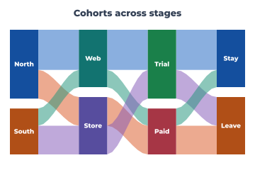

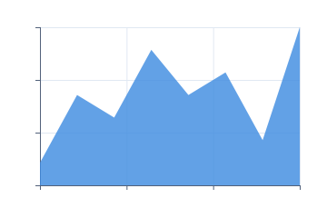

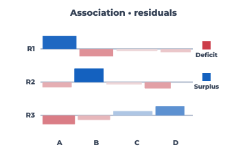

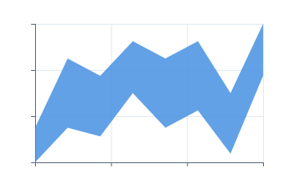

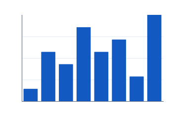

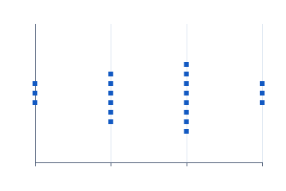

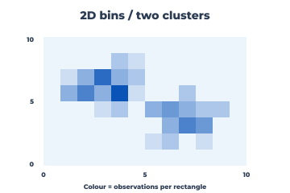

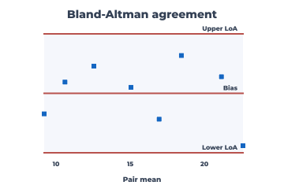

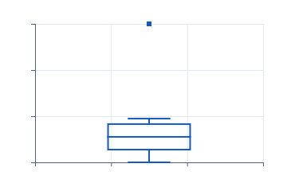

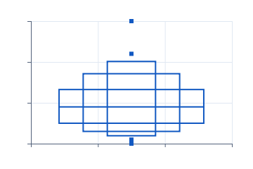

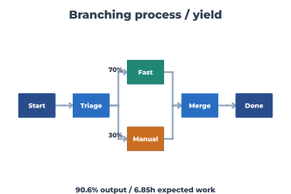

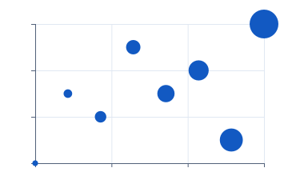

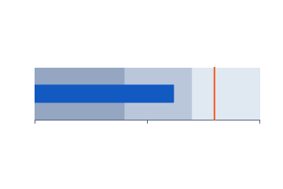

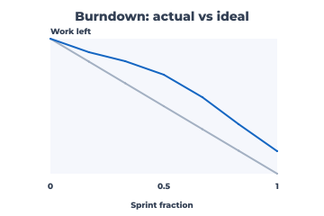

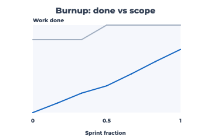

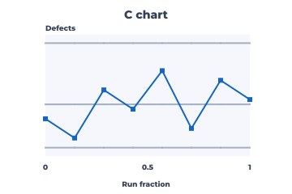

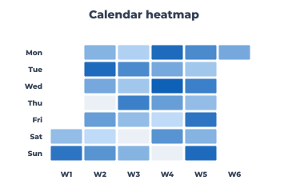

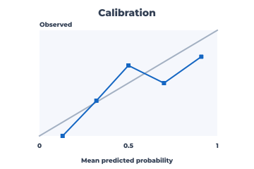

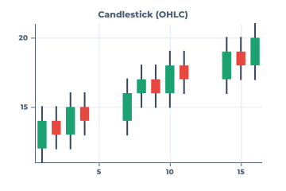

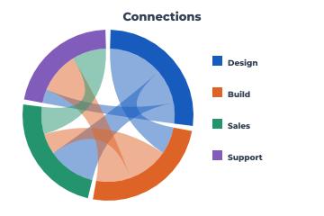

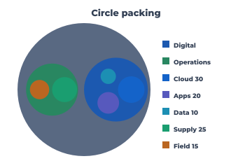

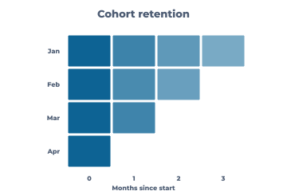

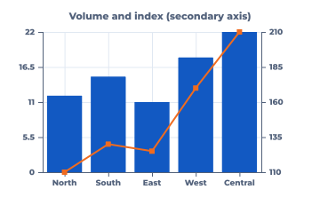

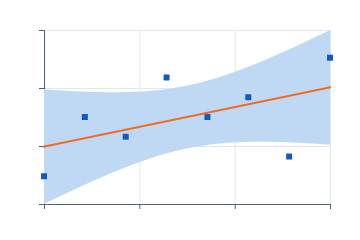

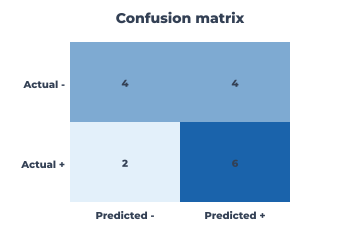

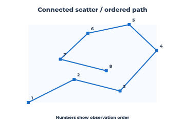

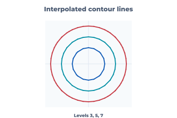

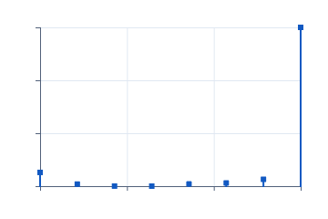

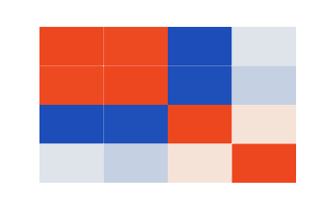

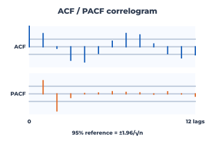

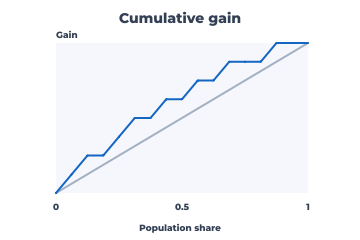

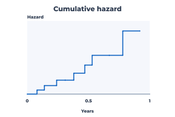

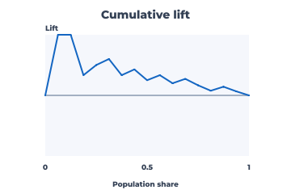

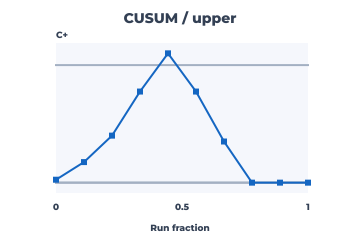

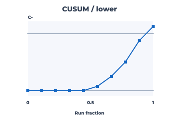

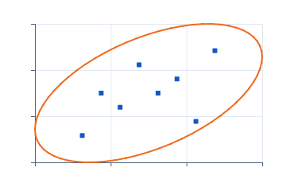

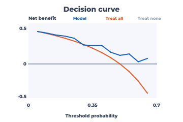

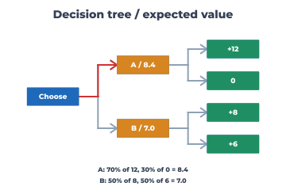

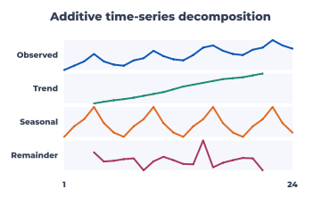

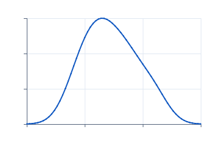

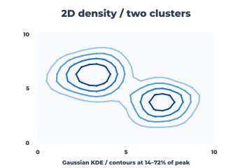

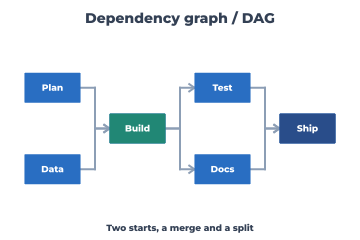

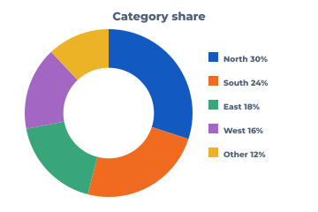

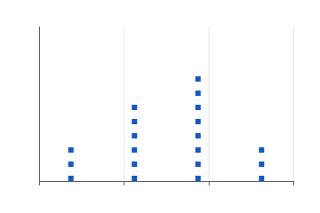

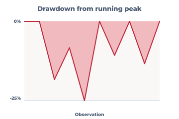

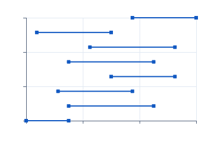

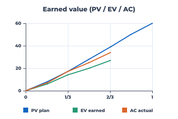

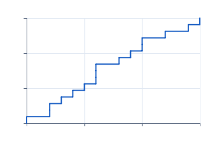

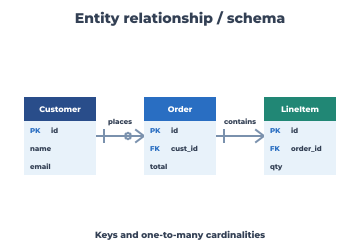

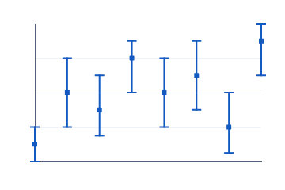


The denominator is the rendered PNG/SVG pairs plus the planned gallery targets, not an engine-readiness score.
Full chart plan and chart/diagram catalogue
# Neper charting engine plan Status: scatter, line, points+line, bubble, OLS fitted line, OLS mean-confidence and prediction bands, covariance data ellipse, bar, grouped bar, signed stacked bar, 100% stacked bar, categorical bar+line combo with a secondary axis, candlestick, OHLC, price-volume, returns/volatility, waterfall, bullet, target gauge, KPI/target-status card, Pareto, population pyramid, pie, donut, radar, rose/wind, ternary, waffle, mekko, two-set Euler, three-set Venn, basic word cloud, treemap, sunburst, icicle, circle packing, Sankey, alluvial, chord, streamgraph, horizon, seasonal subseries, forecast fan, additive decomposition, ACF/PACF correlogram, empirical variogram, vector/quiver, streamlines, phase-space, recurrence, drawdown, cohort retention, contour, filled contour, rank-over-time ribbon, stage funnel, state timeline, status history, event timeline, in-cell sparklines, in-cell data bars, calendar heatmap, forest plot, Bland–Altman agreement, ROC, precision–recall, cumulative gain, cumulative lift, calibration, confusion matrix, partial ROC area, Youden index and decision curve, histogram, frequency polygon, rug, strip/jitter, beeswarm, binned dot plot, stem-and-leaf, range/interval bars, step, area, lollipop, error bars, confidence bands, dumbbells, ECDF, box, boxen, density, hexbin, 2D rectangular bins, 2D KDE contours, ridgeline, normal Q-Q and P-P, probability paper, violin, half violin, raincloud, slopegraph, connected scatter, marginal histogram, heatmap, correlation matrix, mosaic, spine plot, association plot, single-stratum fourfold display, parallel coordinates and scatterplot matrix are delivered, with linear/log10/symmetric-log and reverse Cartesian scales, caller-owned ticks and text labels, linear/log nice breaks, grid/axis passes, basic category-center labels and per-series legend metadata, facet panel geometry, explicit limits for shared/free facet scales, and one hundred and seventy-four PNG plus one hundred and seventy-four SVG previews from Neper. Basic Gantt scheduling, milestone roadmaps, burndown, burnup, earned-value curves, a likelihood-impact risk matrix, a resource histogram, a basic swimlane workflow, a Kanban board layout, a PERT/CPM activity network, a single-stream value-stream map, a SIPOC overview, an expected-value decision tree, a rooted org chart, a layered dependency graph, an explicitly placed flowchart, an event-labeled state machine, an ordered sequence diagram, an entity-relationship diagram and a branching process map are also delivered. Individuals, moving-range, X-bar, subgroup-range, X-bar/S, p/np/c/u, Laney P-prime/U-prime, geometric G, exponential T, CUSUM and EWMA control charts are delivered. Kaplan–Meier survival and Nelson–Aalen cumulative-hazard curves are delivered. OLS residual/fitted, leverage/standardized-residual and Cook's-distance diagnostics are delivered. L061 remains partial until the remaining families, full export coverage and widget integration are evidenced. `hexbin` now maps bounded x/y observations to a pointy-top hexagonal lattice, assigning every point (including panel-edge values) to its nearest valid cell. It returns caller-owned counts and six-vertex polygons for the existing scene and SVG adapters. The Windows/Linux fixture checks count conservation, corner assignment, geometry, adapters and refusal paths; the gallery adds one PNG/SVG pair. Adaptive bin sizing, weighted counts and contour/density smoothing remain planned. `bin2d` maps bounded x/y observations to caller-sized rectangular cells in row-major screen order. Inclusive domain maxima go into the final column or row; exact `u64` counts accompany heatmap-compatible cells and share the existing scene/SVG matrix adapters. A Windows/Linux fixture checks exact counts, corners and midpoints, geometry, adapters and refusal paths; the gallery adds one PNG/SVG pair. Automatic bin sizing, weights and density smoothing remain planned. `density2d` evaluates a normalized product-Gaussian KDE on caller-owned coordinate axes and grids, then reuses marching squares for contours at increasing fractions of the sampled peak. `e.algo.stat.kde2d` exposes the numeric kernel independently. The Windows/Linux fixture checks Gaussian reference values, contour geometry, scene/SVG adapters and refusals; the gallery adds one PNG/SVG pair. Automatic bandwidth selection and probability- mass contour labels remain planned. `half_violin` exposes a caller-selected side of the existing Gaussian KDE as a single caller-owned polygon. `raincloud` composes that polygon with every raw observation in deterministic jitter lanes and a Tukey R7 box/whisker summary, all on the same KDE-extended value axis. Separate Windows/Linux fixtures check left/right symmetry, quartiles, outlier visibility, adapters and refusals; the gallery adds two PNG/SVG pairs. Collision-free raw-point packing remains planned. `slopegraph` maps paired before/after values to fixed left/right positions under one shared vertical domain. It preserves caller series order through crossing segments and emits both endpoints for direct labels. A Windows/Linux fixture checks crossings, constant-domain expansion, scene/SVG adapters and refusals; the gallery adds a labeled PNG/SVG pair. Automatic endpoint-label collision avoidance remains planned. `connected_scatter` reuses ordered PointLine geometry without sorting x, retaining reversals and observation identity. `marginal_histogram` aligns a scatter panel with exact equal-width x frequencies above and rotated y frequencies beside it, including constant-data domain expansion. Separate Windows/Linux fixtures check path order, exact counts, alignment, adapters and refusals; the gallery adds two PNG/SVG pairs. Automatic sequence-label and multi-panel placement remain planned. ## What the references say - **ggplot2** supplies the best semantic spine: data, aesthetic mappings, layers, scales, facets, coordinates, themes, and guides. Its defaults are valuable; its grammar is the part Neper should keep. See the official introduction: https://ggplot2.tidyverse.org/articles/ggplot2.html - **Base R graphics** supplies the broad primitive vocabulary and method dispatch: points, lines, segments, rectangles, polygons, axes, annotations, layout, histograms, box plots, contours, images, pairs, symbols, and perspective. `plot.default(type=...)` also documents points, lines, both, stairs, and histogram-like marks. See: https://stat.ethz.ch/R-manual/R-devel/library/graphics/html/00Index.html - **lattice/Trellis** supplies the panel model: a plot object is computed first, then printed into conditioned panels with shared or independent scales. This maps directly to a facet stage over one common mark/layout contract. See: https://stat.ethz.ch/R-manual/R-devel/library/lattice/help/Lattice.html - **celvyx** shows the product-scale breadth worth borrowing: its pack plans cover statistical diagnostics, SPC, finance, operations, quality, science and engineering charts. The useful lesson is to keep the chart type registry thin and put calculations in domain modules; do not copy its UI-specific painter architecture into Neper. - **sixsg** contributes a practical shortlist (histogram, box, scatter, SPC, probability/ECDF, KDE, ROC, Bland–Altman, fan, bee-swarm and rug plots) and a no-third-party-library/offline principle. Its current browser path delegates general plots to webR/plotly; Neper should own deterministic geometry instead. ## Design contract `e.gfx.chart` is the grammar boundary. It borrows numeric columns, maps them into caller-owned screen-space marks, and never owns a device, window, global theme or data frame. The same `Layout` can be appended to `e.gfx.scene` or SVG, with scene output rasterized and PNG-encoded; PDF, widget and GPU-buffer adapters remain future work. The stable sequence is: 1. **Data** — typed columns/views; missingness and categorical levels are explicit. 2. **Mapping** — x/y plus colour, fill, size, shape, group, weight and facet keys. 3. **Statistics** — binning, summaries, smoothing and model overlays, each pure and independently testable. 4. **Scales** — linear, log10, symmetric-log and reverse Cartesian mapping are delivered, with equal transformed-space tick metadata. `nice_ticks` adds 1/2/5 linear steps and sampled 1/2/5 log decades; symmetric-log retains equal transformed-space positions. `category_ticks` places ordinal category centers for bar labels, without a full discrete scale. Date scales, locale/date label formatting and out-of-bounds policy remain. 5. **Coordinates** — Cartesian first; polar, flipped, fixed-aspect, map and 3-D projections later. 6. **Geometries** — marks only; no data analysis hidden in a painter. 7. **Facets/layout** — trellis panels, shared/free scales, strips and guides. 8. **Theme/guides** — typography, grid, axes, legends, colour-blind palettes, alt text and export metadata. 9. **Backend** — scene display list first, then PNG/SVG/PDF and interactive hit data. The delivered foundation implements the first geometry contract for scatter, line and bar marks, including empty/mismatched/non-finite input refusal, constant-domain padding, inverted screen Y, bar baseline inclusion and caller-storage bounds. The first distribution slice adds equal-width histograms with caller-owned counts and contiguous rectangles. Its final bin includes the maximum, and a constant sample is centered in a padded domain. Step/stairs maps ordered x/y columns into horizontal then vertical segments. `e.gfx.chart.scene` appends the same marks to a scene display list; `examples/chart_gallery.e` renders the delivered kinds through the CPU renderer and PNG encoder. ECDF accepts an ascending sample and emits exact 1/n rises, including tied observations. Box plots reuse R7 quartiles for Tukey whiskers; density reuses Gaussian KDE with an explicit or Scott bandwidth; Q-Q plots reuse normal quantiles and an R7 quartile reference. Boxen plots reuse R7 quantiles for nested letter-value ranges with explicit depth, median rule and tail observations beyond the outer box. Normal P-P plots compare empirical midpoint ranks with a caller-specified normal CDF and the identity line. Violin plots mirror that same Gaussian estimate into a filled outline. Ridgeline plots evaluate per-group Gaussian KDE on one shared x grid and draw filled Area layers on spaced baselines. A global density peak preserves height comparability; the caller controls bandwidth, overlap, group membership and storage. `gfx_chart_ridgeline` checks numeric values, refusal paths and both adapters on Windows and Linux. Group-wise weights and transformed x scales remain. Frequency polygons reuse histogram counts and join bin centers to zero at the outer edges. Rugs map every observation to an independent short x-axis stroke, preserving ties rather than binning them. Both reuse the existing line/stroke adapters and keep output storage with the caller. Points+line combines the existing Cartesian scatter and line layouts with one domain and paints the line before its points. Strip plots map observations to numeric x positions and add repeatable vertical jitter, preserving ties; both use caller-owned coordinates and the existing scene/SVG mark paths. `bubble` reuses the scatter mapping and independent x/y scales, then maps a nonnegative size column to circle area via square-root radius. Circle bounds remain caller-owned; scene paints cubic-circle paths and SVG emits circle marks. Zero-sized observations stay in the data but are invisible. A quantitative size legend, overlap policy and alternate area transforms remain guide work. `regression_line` uses the existing streaming bivariate accumulator for an ordinary-least-squares fit, then returns a Line layer and a domain covering both observations and fitted endpoints. `covariance_ellipse` uses its sample covariance and a caller-selected Mahalanobis radius to trace a data ellipse; it refuses singular covariance. These are linear-coordinate overlays that share explicit limits with scatter marks and reuse Line scene/SVG adapters. A data ellipse is not a confidence region for the mean. `regression_interval` uses the same OLS accumulator, residual variance with n-2 degrees of freedom and leverage to produce either a two-sided mean-confidence or new-observation prediction ribbon. The caller supplies the appropriate Student-t critical value and polygon resolution; the filled Band and fitted Line share a domain including observations. `gfx_chart_overlays` checks numeric values and both adapters on Windows and Linux. Simultaneous confidence bands, nonlinear smoothers, automatic quantiles and transformed-axis overlays remain planned. `e.algo.stat.regression_diagnostics` emits fitted values, raw and internally standardized residuals, leverage and Cook's distance from one streaming OLS fit into caller storage. It refuses singular x, exact fits and undefined influence statistics. Scatter and Lollipop layouts produce three diagnostics without a new painter. `gfx_chart_regression_diagnostics` checks reference numbers and scene/SVG output on Windows and Linux. Leave-one-out residuals and robust regression remain planned. `e.algo.stat.survival_curve` groups sorted nonnegative follow-up times, applying tied events before censoring at each time. It emits a time-zero baseline, Kaplan–Meier survival, Nelson–Aalen cumulative hazard and counts at risk/events/censored into caller storage. Existing Step and Scatter marks render the two curves and censor marks. `gfx_chart_survival` checks reference fractions, ties, all-censored data, malformed input and scene/SVG adapters on Windows and Linux. Greenwood intervals, log-rank comparisons and competing risks remain planned. `e.algo.stat.imr_limits` derives consecutive moving ranges and the standard three-sigma Individuals/MR limits. `xbar_r_limits` derives subgroup means, ranges and A2/D3/D4 limits for equal subgroups of size 2–10. Both reuse PointLine and Rug marks for observations and upper/center/lower rules. `gfx_chart_control` checks NIST numeric references, invalid/capacity paths and scene/SVG output on Windows and Linux. `xbar_s_limits` uses subgroup sample standard deviations with the c4 bias correction for three-sigma mean and S limits. `cusum_control` computes upper/lower tabular sums and decision signals; `ewma_control` computes recursive weighted means with startup-adjusted limits. `gfx_chart_weighted_control` checks numeric references and refusal paths on Windows and Linux. `subgroup_control_phased` reuses the X-bar/R or X-bar/S calculator within each phase of at least two equal-size subgroups and returns per-subgroup mean and spread limits. `gfx_chart_subgroup_phases` compares both modes with independent phase calculations and checks refusal paths on Windows and Linux; four phase-split PNG/SVG previews show X-bar/R, R, X-bar/S and S. `imr_phase_control` estimates separate Individuals limits for each phase of at least two observations, excludes cross-boundary moving ranges, and emits per-point limits. The gallery shows a visible phase split; unequal subgroup sizes and historical parameter overrides remain planned. `e.algo.stat.attribute_control` computes pooled binomial p/np and Poisson c/u three-sigma values and limits in caller storage. Variable subgroup sizes change p/u limits per observation; np requires equal size and c equal unit area. P limits clamp to [0,1], np to [0,n], and all lower limits to zero. PointLine and Rug marks draw observed values and three control-limit traces. `gfx_chart_attribute_control` checks reference values, malformed sizes, bounds and scene/SVG output on Windows and Linux. `attribute_control_phased` reuses the P/Np/C/U estimator within each phase, requiring at least two subgroups and allowing Np subgroup size to change only at a boundary. Four phase-split PNG/SVG previews disconnect the limit traces; `gfx_chart_attribute_phases` checks numeric equivalence to independent phases and refusals on both hosts. `laney_control` reuses p/u values, standardizes each by its subgroup-specific binomial or Poisson sigma, and multiplies the ordinary three-sigma limits by the adjacent z-score moving-range estimate divided by 1.128. `gfx_chart_laney` checks overdispersion, variable subgroup sizes and refusals on Windows and Linux. `laney_control_phased` estimates center and Sigma Z independently per phase, excluding boundary moving ranges; two phase-split PNG/SVG previews reuse the attribute renderer. `gfx_chart_laney_phases` compares both P-prime/U-prime to independent stage calculations and checks refusals on Windows and Linux. `g_control_limits` fits the geometric event probability from whole-number opportunities between events and interpolates the 0.135%, 50% and 99.865% CDF percentiles. `t_exponential_control_limits` fits positive elapsed times with an exponential mean and uses the same tail probabilities. Both reuse PointLine/Rug rules; `gfx_chart_rare_event` checks numeric references, degenerate/invalid inputs and a large-gap case on Windows and Linux. Date conversion, Weibull T limits, simultaneous events and rare-event run tests remain planned. `control_run_rules` checks the eight standard special-cause tests with per-observation centers and sigmas, marking the point that completes each pattern. `gfx_chart_run_rules` checks every test, strict boundary behavior, varying sigma and refusal paths on Windows and Linux. The PNG/SVG preview uses PointLine, Rug and highlighted Scatter marks. `control_run_rules_phased` resets all eight test windows at each boundary; `gfx_chart_phases` checks reset and malformed-boundary behavior on Windows and Linux. Automatic chart-specific test selection and false-alarm calibration remain planned. Binary classification diagnostics share `e.algo.stat.binary_curve`: a caller-owned descending score order, with tied scores advanced as one threshold. The same cumulative true/false-positive counts yield ROC, precision–recall, cumulative gain and lift geometry. `roc_auc` uses trapezoids and `average_precision` uses recall-weighted precision steps; neither invents a threshold inside a tied score. `gfx_chart_binary_curves` checks reference values, all-one-class and storage refusals, and scene/SVG output on Windows and Linux. Equal-width calibration bins aggregate mean predicted and observed probabilities; a caller-selected threshold produces four confusion counts. Existing PointLine and Heatmap layouts draw both, without new mark types. `gfx_chart_diagnostic_tables` checks numeric references, refusals and both adapters on Windows and Linux. ROC extensions integrate the tie-grouped sweep to a caller-selected false-positive cutoff, fill that raw partial-AUC region with an Area mark and identify the first threshold attaining maximal Youden J. Decision curves evaluate probability thresholds for model and treat-all net benefit against treat-none zero, using the existing confusion counter and Line/Rug marks. `gfx_chart_binary_curves` checks numeric references, bounds, capacity and scene/SVG output on both hosts. Beeswarm starts from strip's exact numeric x mapping and packs overlapping six-pixel square marks into free vertical lanes. The current candidate scan is cubic in the worst case and refuses a panel too short to fit every observation. Binned dot plots reuse histogram counts and place one caller-owned point per observation at its bin center, refusing vertical overflow. Both use the same scatter mark adapters, with lane height kept separate from a numeric y scale. Area plots close ordered x/y points against an explicit baseline; lollipops reuse the same baseline and point mapping. Error bars borrow center/lower/upper columns, validate containment and emit a stem, two caps and a point per row. Confidence bands close ordered lower/upper series into a filled caller-owned polygon. Dumbbells use numeric vertical positions and horizontal lower/upper endpoints, emitting one segment and two points per row. Both reject inverted intervals and render through the existing scene and SVG mark branches. Grouped bars borrow category-major values and return per-series `Bar` layouts over caller-owned rectangles, so the scene/SVG adapters can colour each series without a new mark type. Stacked bars accumulate positives and negatives away from zero; the normalized variant requires a positive, nonnegative total in every category. `category_ticks` drives the existing label pass at each bar center; `legend_items` borrows series names and emits swatch/label positions. The caller supplies colours and decides where the legend fits. Automatic legend placement, wrapping and collision handling remain planned. `bullet` returns widest-to-narrowest qualitative ranges, a slimmer actual bar and a target rule as separate caller-owned layers sharing one zero-to-maximum scale. Existing Bar and Rug adapters paint them; category labels and automatic palette selection remain caller/guide work. `gauge` returns a background half-ring, measured-value half-ring and target rule as Area/Rug layers over an explicit positive maximum. `target_status` computes signed actual-minus-target delta and threshold attainment for either higher- or lower-is-better metrics. The gallery composes it with the existing bullet layers into a KPI card. `gfx_chart_gauge` checks boundary geometry, range/storage refusals, target direction and both adapters on Windows and Linux. Dynamic labels and warning/critical thresholds remain caller work. `pareto` stably orders nonnegative category counts, exposes that order for labels, and returns frequency Bar and cumulative-fraction PointLine layers with independent left count and right percentage domains. It refuses zero totals; the gallery labels both axes. The insertion sort is quadratic until category counts warrant a caller-scratch mergesort. `population_pyramid` maps two nonnegative age columns to left/right Bar layers with one shared maximum, a caller-sized central label gutter and row gaps. Input runs youngest to oldest, displayed bottom to top. The fixture checks mirrored geometry, invalid counts, gaps and storage plus scene/SVG adapters on Windows and Linux. Age labels and series names remain caller-owned guide text. `combo_bar_line` composes existing Bar and PointLine layouts at identical category centers. The bar domain includes zero; the line keeps its independent vertical domain, and the caller renders the corresponding left/right guides. It rejects mismatched/non-finite columns and short storage. The gallery's secondary-axis preview reuses the Pareto guide renderer, with numeric right labels instead of percentage labels. Arbitrary x positions, more than two vertical scales and aligned axis tables remain planned. `candlestick` and `ohlc` borrow open/high/low/close columns at strictly increasing numeric x positions. The shared domain validates the price envelope and pads the first and last marks by half the smallest x interval. Candlestick emits wick strokes, rising bodies and falling bodies as separate caller-coloured Rug/Bar layers; doji bodies become horizontal strokes. OHLC emits high-low stems plus left-open and right-close ticks. Both use the existing scene/SVG adapters and have numeric/refusal fixtures on Windows and Linux. Date labels, corporate-action adjustment remains separate work. A price-volume companion shares a padded numeric x domain across a closing-price Line and volume Bars; `gfx_chart_price_volume` checks irregular positions, alignment, invalid prices and volumes, capacity refusals and scene/SVG output on both hosts. Simple per-observation returns and trailing sample-SD volatility share x across two panels; `gfx_chart_returns_volatility` checks numeric references, flat series, invalid windows, alignment and both adapters on Windows and Linux. Neither calculation annualizes or adjusts for dividends and corporate actions. `pie` turns nonnegative category weights into caller-owned slice polygons. A zero inner-radius ratio yields pie slices; a ratio between zero and one yields a donut. Each slice is an Area layer shared by scene and SVG; callers supply colours and labels. Zero totals, invalid bounds/ratios and short storage are refused. A fixed 96-segment full-circle budget is the current tessellation ceiling; adaptive segment selection belongs with zoom-aware rendering. `waffle` partitions a fixed rectangular grid among nonnegative category weights, rounding cumulative boundaries while preserving the exact cell count. Each category receives a caller-owned Bar layer; callers choose grid dimensions, cell gap, colours and labels. The ordered rounding can differ from ideal share by one cell per category; largest-remainder assignment remains an upgrade path. `treemap` accepts a parent-before-child hierarchy with leaf weights and returns one rectangle per node, partitioning each parent along its longer side in sibling order. Leaves reuse Bar layers and caller-owned colours; callers may outline group rectangles and label them. The slice-and-dice scan is quadratic and can create long strips; a caller-scratch squarified layout is future work. The fixture checks proportions, hierarchy/refusal cases and scene/SVG output on Windows and Linux. `sunburst` shares treemap's validated leaf-weight hierarchy. It assigns each node an angular span proportional to its subtree, one ring per depth, with shallow leaves extending to the outer rim. Caller-owned arcs, points and Area layers pass through the existing scene/SVG adapters; zero-total nodes emit empty layers. A caller-selected center-hole ratio leaves room for a root label. The fixture checks shares, depths, zero leaves, refusal paths and both adapters on Windows and Linux. Label collision and adaptive curved tessellation remain. `icicle` reuses the same hierarchy totals and Bar adapter, placing each depth in a horizontal band and dividing parent widths by subtree share. Positive leaves extend to the panel bottom; zero-total nodes retain empty layers. Caller-owned rectangles and depths make the layout deterministic. The fixture checks proportions, depth, zero leaves, storage refusals and scene/SVG output on Windows and Linux. Preceding-sibling scans are quadratic until larger trees justify caller-owned cursors. `circle_pack` shares the validated hierarchy, placing ordered siblings as non-overlapping circles inside their parent. Each group uses one ring; sibling circle areas are proportional to subtree totals, with caller-selected padding. Caller-owned circle bounds reuse Bubble scene and SVG adapters, and zero-total nodes emit empty layers. The fixture checks area ratios, containment, separation, invalid input and storage refusals on Windows and Linux. Ring placement is deterministic but not density-optimal; tangent packing remains an upgrade path. `sankey` takes ordered nodes in zero-based columns and nonnegative weighted forward links. A common pixel-per-unit scale keeps each ribbon's thickness constant through every column; nodes use the larger of incoming and outgoing flow, leaving slack for imbalance. Caller-owned node rectangles and smoothstep Area polygons reuse Bar and Area scene/SVG adapters, with links painted first. The fixture checks two- and three-column numeric geometry, zero links, refusals and both adapters on Windows and Linux. The current input order is stable but can produce crossings; automatic barycentric reordering and interactive highlighting remain planned. `alluvial` reuses Sankey geometry but requires each link to join adjacent columns and each interior node to conserve its incoming and outgoing flow. The caller assigns stable cohort colours across stages; the gallery shows four stages and twelve separately colourable ribbons. Input-order stacking can still produce crossings, and cohort identity is supplied by the caller. `streamgraph` stacks nonnegative sample-major series around a centered silhouette baseline, using one scale across all times and caller-owned Area polygons. It reuses the existing scene/SVG fill adapters; the focused fixture checks geometry, malformed values, storage and both adapters on Windows and Linux. Wiggle offsets and automatic layer ordering remain planned. `ribbon_rank` maps sample-major values to equal-height ordinal bands, with larger values ranked first and stable input-order ties. Caller-owned Area polygons reuse both renderers; `gfx_chart_ribbon_rank` checks reference ranks, ties, malformed inputs, capacity and scene/SVG output on Windows and Linux. Missing categories and curved crossover interpolation remain planned. `chord` lays out a square row-major directed matrix as group arcs and one ribbon per unordered pair. Opposite cell weights control the two ribbon ends independently, retaining asymmetry; diagonal values form self loops. Zero pairs emit empty layers. Caller-owned Area polygons paint through the existing scene/SVG adapters, with fixed-step quadratic curves and group rings drawn on top. The fixture checks reference geometry, refusal paths and both adapters on Windows and Linux. Adaptive tessellation and interactive highlighting remain planned. `mekko` maps nonnegative category-major values into variable-width columns with within-column stacks. Each rectangle's area equals its value's share of the grand total; zero-total categories are retained as zero-width columns. It returns series-major Bar layers through the existing scene/SVG adapters. `gfx_chart_mekko` checks proportions, empty and invalid inputs, storage and both adapters on Windows and Linux. Gaps are omitted to preserve area. `mosaic` maps a nonnegative contingency table to area-proportional cells and computes signed Pearson residuals from independence for diverging colour. Optional gutters separate positive cells; zero-count cells emit no tile. `gfx_chart_mekko` checks numeric residuals, area, refusals and both matrix adapters on Windows and Linux. `association` uses square-root expected counts for rectangle widths and signed Pearson residuals for heights around a separate baseline per row; the common horizontal and vertical scales preserve area proportional to observed-minus- expected counts. It reuses matrix colour adapters and Rug baseline strokes. `gfx_chart_mekko` checks reference residuals, width ratios, independence, refusals and scene/SVG output on Windows and Linux. `fourfold` accepts one column-major 2x2 table, equalizes both margins while retaining the odds ratio, and draws four caller-owned quarter-circle polygons whose areas follow standardized frequencies. Optional Wald confidence arcs use the existing Rug stroke adapter and apply a 0.5 continuity correction if any observed cell is zero. `gfx_chart_mekko` checks odds ratio, interval, radii, independence, refusals and scene/SVG on Windows and Linux. Multi-stratum auto layout, alternate standardizations and multiplicity adjustment remain. `horizon` folds signed deviations from an explicit origin into positive and negative colour bands of caller-selected width. It splits linear segments at each band threshold before creating caller-owned Area quadrilaterals, so crossings and irregular x spacing retain their correct geometry. Values beyond the selected band range are refused rather than silently clipped. `gfx_chart_horizon` checks threshold geometry, band identity, irregular spacing, refusals and scene/SVG output on Windows and Linux. Automatic origin and band selection, missing-data gaps and more compact paths remain planned. `seasonal_subseries` groups successive cycles by caller-selected period, draws each phase as its own Line and marks its arithmetic mean with a Rug rule. Partial final cycles retain the available observations, while one-cycle input is refused. `gfx_chart_seasonal` checks geometry, means, partial cycles, flat data, invalid/storage refusals and scene/SVG output on Windows and Linux. Explicit timestamps/phases, missing-data gaps and alternative base functions remain planned. `fan` accepts band-major outer-to-inner forecast intervals plus a median curve, validates quantile nesting and maps all bands to one shared domain. Band polygons and the median Line reuse the existing scene/SVG adapters; `gfx_chart_fan` checks irregular x positions, flat distributions, crossing refusals, capacity and both adapters on Windows and Linux. Precomputing quantiles from simulations, coverage labels and observed-history anchors remain planned. `decomposition` computes classical additive trend, seasonal and remainder components from evenly spaced observations. A centered moving average uses half-weighted endpoints for even periods; phase means are centered to zero. Four Line panels share the time axis while scaling their y values separately, and trend/remainder omit the endpoint samples without full windows. `gfx_chart_decomposition` checks exact odd/even references, flat data, invalid/capacity refusals and scene/SVG output on Windows and Linux. Multiplicative/STL decomposition, missing data and date labels remain planned. `euler2` sizes two circles from set totals and solves their separation for the specified intersection area. Disjoint and containment cases have explicit layouts. `venn3` makes a nominal three-circle diagram with anchors in all seven membership regions; it does not encode seven arbitrary region areas. `gfx_chart_venn_euler` checks overlap references, membership anchors, invalid inputs, capacity and both scene/SVG adapters on Windows and Linux. `word_cloud` takes pre-tokenized, unique words with weights and normalized font metrics, filters an exact-match exclusion list, maps weight to type size and packs non-overlapping caller-owned text boxes by a deterministic spiral. `gfx_chart_word_cloud` checks weight order, exclusions, overlap/bounds, refusals and text output through scene/SVG on Windows and Linux. Tokenization, case normalization, font embedding and large-cloud packing remain planned. `state_timeline` maps ordered half-open intervals with f64 time endpoints into row-aligned Bar layers, coalescing exact abutting equal states and leaving missing spans blank. It refuses overlaps, out-of-order rows, out-of-domain times and short storage. The same layout supports an operational state timeline and a status-history preview with separate caller-owned legends; the focused fixture checks geometry and scene/SVG adapters on Windows and Linux. Date/time tick formatting, timezone semantics and event annotations remain planned. `gantt` maps task start/end times and completion fractions into two caller-owned Bar layers over one explicit time domain and categorical rows. Tasks may arrive in any order; invalid intervals, out-of-domain times, invalid completion and short storage are refused. `gfx_chart_gantt` checks geometry, progress values, refusals and scene/SVG output on Windows and Linux. Dependencies, critical-path calculation and calendar scheduling remain planned. `sparkline` assigns evenly spaced x positions to dense numeric samples and reuses Line layout without guides; the gallery composes four in-cell rows. `calendar_heatmap` accepts sorted day offsets, a Monday-first weekday and a bounded 366-day domain, leaving missing offsets unpainted. It returns sparse Heatmap cells with caller-selected gaps; scene and SVG matrix adapters accept those sparse cells. `gfx_chart_calendar_sparkline` checks geometry, refusals and both adapters on Windows and Linux. Calendar/date labels, locale rules, missing-value policy for sparklines and shared cell scales remain planned. `event_timeline` maps ordered f64 timestamps to lane-centered Lollipop marks with caller-owned points and stems. `in_cell_bars` maps nonnegative values to horizontal Bar marks inside caller-supplied cells against one explicit maximum; zero values leave the track blank. `gfx_chart_events_cellbars` checks large timestamps, geometry, ordering, bounds/capacity refusals and scene/SVG output on Windows and Linux. Event labels and row names remain caller-owned; collision avoidance and nullable/reporting data remain planned. `milestone_roadmap` reuses the ordered event positions and maps each event to a filled diamond Area layer. It preserves the explicit f64 time domain, rejects out-of-order times, invalid rows, oversize markers and short caller storage, and leaves lane labels with the caller. `gfx_chart_milestone_roadmap` checks geometry, refusals and scene/SVG output on Windows and Linux. Dependency connectors and calendar/time-zone semantics remain planned. `burndown` computes a linear ideal remaining-work trace from the starting total to zero over the observed time domain. `burnup` pairs completed work with a changing scope trace and refuses completion above scope. Both reuse Line marks with ordered x positions and shared nonnegative y limits; actual burndown work may rise after scope changes. `gfx_chart_burn` checks irregular times, numeric references, flat data, refusals and scene/SVG output on Windows and Linux. Missing observations, sprint-calendar dates and forecast confidence intervals remain planned. `earned_value` aligns planned value (PV), earned value (EV) and actual cost (AC) on one numeric time/value domain. The PV curve may continue beyond the observed EV/AC prefix, keeping the reporting point distinct from the plan horizon. It validates nonnegative finite values, ordered time and caller capacity, then reuses three Line layouts and existing adapters. `gfx_chart_earned_value` checks partial-horizon alignment, numeric references, flat data, refusals and scene/SVG output on Windows and Linux. Forecasts, variance indices and earned-value estimation stay with project analytics. `risk_matrix` lays caller-supplied nonnegative rating values into a square likelihood-by-impact heatmap, with high impact at the top, and separately counts risks in each cell. The caller defines the rating policy and colour scale; the layout does not infer severity thresholds. `gfx_chart_risk_matrix` checks the orientation, duplicate counts, invalid input, caller capacity and scene/SVG output on Windows and Linux. The gallery includes a labeled PNG/SVG pair. `resource_histogram` splits an explicit time domain at every assignment start and end. For each resulting period it sums concurrent resource units, then returns normal and excess Bar layers split at caller-supplied capacity plus a capacity Rug rule. It preserves short overloads instead of averaging into fixed bins. `gfx_chart_resource_histogram` checks exact period loads, gaps, overload geometry, invalid inputs, capacity refusals and scene/SVG output on Windows and Linux. The gallery includes a labeled PNG/SVG pair. `swimlane` places role-partitioned process steps in caller-sized stage columns and lane rows. Forward links may cross lanes; each reuses Rug strokes for an orthogonal elbow and directional arrowhead. The caller owns step labels and lane colours. `gfx_chart_swimlane` checks handoff geometry, same-lane links, duplicate/out-of-range nodes, backward links, storage refusals and scene/SVG output on Windows and Linux. The gallery includes a labeled PNG/SVG pair. This is a basic diagram layout, not a BPMN 2.0 execution model or interchange format; gateways, events and automatic collision routing remain planned. `kanban` lays variable-height cards in caller-specified workflow columns, preserving their input order within each column. It returns column and card rectangles plus counts and WIP-limit status; a breached limit remains visible instead of deleting or refusing cards. A zero limit means unrestricted. `gfx_chart_kanban` checks stable placement, over-limit status, empty boards, invalid geometry, storage/panel overflow and scene/SVG output on Windows and Linux. The gallery includes a labeled PNG/SVG pair. Pull policies, grouped WIP limits and live drag/drop are separate application or L062 work. `forest_plot` validates study estimates inside intervals and maps them to horizontal segments plus center markers on linear, log10 or symlog x scales; the reference line is a separate caller-colourable Rug layer. Study weights, pooled estimates and interval computation remain statistical inputs, not implicit chart operations. `e.algo.stat.agreement_limits` computes paired difference bias and sample-SD limits with a caller-selected critical multiplier. `bland_altman` maps paired means/differences to Scatter marks and three Rug guides at the lower limit, bias and upper limit. The focused fixture checks numeric references, invalid inputs, capacities and scene/SVG adapters on Windows and Linux. Confidence intervals for limits, proportional-bias analysis and nonlinear method comparison remain planned. `funnel` maps nonincreasing stage counts to centered trapezoid Area layers with an explicit inter-stage gap. This is the business conversion funnel, not the statistical funnel plot. Both charts refuse invalid totals/stages and short caller storage and reuse the scene/SVG adapters. Matrix layouts map row-major values into caller-owned cells; Pearson correlation reuses `e.algo.stat`. The scene adapter applies caller-selected sequential or diverging colours. `facet_grid` supplies equal row-major panel rectangles; scale sharing/freeing each numeric axis is available through explicit limits; categorical facet mapping and strips remain future work. `scatterplot_matrix` maps row-major observations into off-diagonal scatter panels with one range per variable and caller-owned coordinates; diagonal panels are reserved for caller labels. `gfx_chart_parallel_coordinates` checks constant columns, invalid input, storage and scene/SVG output on both hosts. `Spec` now carries independent x/y scale configurations for Cartesian marks. Log10 refuses non-positive domains, symmetric-log has an explicit linear threshold, and reverse maps fractions without copying columns. `ticks` returns caller-owned data values and normalized positions; the scene guide pass draws grid and axis strokes. `layout_with_limits` borrows optional two-value x/y domains: an empty pair keeps a panel free, while explicit limits let facets share either or both scales without copying columns. Limits must contain the data (and any baseline); clipping/out-of-bounds policy remains planned. `nice_ticks` chooses human-readable linear/log breaks and `format_ticks` uses Neper's shortest-round-trip float formatter into caller-owned text storage; `guide_labels` positions those or caller-supplied x/y tick strings in caller-owned metadata. The scene adapter shapes them with `e.text.layout` and a registered TrueType font; SVG streams escaped `<text>` elements. Titles and annotations use the same label contract. Automatic numeric/date formatting, collision avoidance and layout-aware margins remain planned. Symmetric-log currently uses the prior transformed-space breaks, with automatic text but no separate nice-break policy. `e.gfx.chart.svg` streams the same mark and matrix layouts as SVG with escaped title/description metadata, current CPU-renderer channel packing for solid colours, and axis/grid strokes from the same tick positions. The gallery exports a vector companion for every PNG. `e.gfx.chart.scene.rasterize` now exposes a caller-owned straight-RGBA image from a chart scene; callers compose it with `e.fmt.png.encode` after rendering, so arena-backed writers are not interleaved with render allocations. The gallery uses this path, and a PNG decode fixture checks transparency on both hosts. Gradients, PDF/widget APIs, SVG font embedding and backend-parity measurements remain planned. The scene renderer keeps equal-prefix/suffix guide paint stationary when a changed mark appears to move: the pixel-shift shortcut is refused in that case, preventing stale ticks in subsequent chart PNGs. The distribution fixture checks this frame transition on both hosts. ## Chart and diagram catalogue This is the planned registry, grouped by the calculation or geometry they share. `docs/chart-preview-backlog.txt` separately tracks individual gallery deliverables, including grouped-catalogue variants and acceptance previews. The progress-page preview denominator counts those targets plus rendered PNG/SVG pairs; it is not the grouped-catalogue count or a claim of full chart-engine parity. Scatter, line, points+line, bar, grouped/dodged bar, stacked bar, 100% stacked bar, histogram, frequency polygon, rug, strip/jitter, beeswarm, binned dot plot, step/stairs, area, lollipop, error bars, confidence bands, dumbbells, ECDF, box, boxen, density, hexbin, 2D rectangular bins, 2D KDE contours, ridgeline, Q-Q, P-P, violin, half violin, raincloud, slopegraph, connected scatter, marginal histogram, heatmap, correlation matrix, mosaic, association, fourfold, parallel coordinates, scatterplot matrix, bubble, OLS fitted line, OLS mean-confidence and prediction bands, covariance data ellipse, categorical bar+line combo, candlestick, OHLC, basic price-volume, returns/rolling volatility, basic waterfall, bullet, target gauge, KPI/target-status card, Pareto, population pyramid, pie, donut, radar, area-scaled rose/wind, ternary composition, waffle, mekko/marimekko, two-set area-proportional Euler, nominal three-set Venn, basic word cloud, treemap, sunburst, icicle, basic circle packing, basic Sankey, basic alluvial, basic chord, centered streamgraph, basic horizon plot, seasonal subseries, forecast fan chart, additive decomposition plot, ACF/PACF correlogram, empirical variogram, vector/quiver plot, streamlines, phase-space portrait, recurrence plot, basic drawdown chart, cohort retention triangle, contour isolines, filled contour bands, basic rank-over-time ribbons, basic stage funnel, state timeline, status history, event timeline, in-cell sparklines, in-cell data bars, calendar heatmap, basic forest plot, Bland–Altman agreement, ROC, precision–recall, cumulative gain, cumulative lift, calibration, confusion matrix, partial ROC area, Youden index and decision curve are delivered; every other entry remains planned. Basic Gantt task spans and completion layers and diamond milestone roadmaps are delivered, as are burndown and burnup traces; dependency links remain planned. The planned/earned/actual-cost earned-value curve is delivered. The likelihood-impact risk matrix with caller-supplied ratings is delivered. The variable-width resource histogram with explicit capacity is delivered. The basic role-lane workflow with directional cross-lane links is delivered. The variable-height Kanban board with visible per-column WIP status is delivered. The activity-on-node PERT/CPM network computes three-point expected durations and per-activity variance, forward/backward elapsed-time passes, slack and the unconstrained critical path. It rejects cycles and invalid estimates, and lays out staged nodes and directional links. Working calendars, leads/lags, resource levelling and project-duration uncertainty remain planned. The single-stream value-stream map reports processing, value-added and queue times, lead time, process-cycle efficiency and rolled yield. Its stage boxes are equally spaced for legibility, while the lower time ladder has proportional wait and processing intervals. Branches, inventory/transport symbols, takt and capacity constraints and future-state comparison remain planned. The SIPOC overview fixes supplier, input, process, output and customer column order while accepting caller-owned entries and labels. It lays out variable column counts with header flow arrows and refuses invalid or overcrowded geometry. Entity relationships, swimlane handoffs and process execution stay with their separate diagram families. The decision tree accepts a rooted choice/chance/outcome tree, evaluates chance nodes from branch probabilities, selects maximum expected value at choices and lays out leaf intervals with a highlighted chosen branch. Influence diagrams, utility functions and DAG decision networks remain planned. The org chart accepts a rooted single-parent hierarchy, preserves report order, allocates horizontal space by descendant leaves and emits caller-owned boxes and orthogonal connectors. Multiple roots, dotted-line relationships and interactive collapse remain planned. The dependency graph accepts a general DAG with multiple sources, joins and disconnected components. It assigns longest-path ranks through a topological pass, spaces peers within ranks and emits caller-owned boxes and directional orthogonal connectors. Crossing reduction, port selection and graph editing remain planned. The flowchart accepts explicitly placed terminal, process and decision nodes plus opposing entry/exit ports. It emits chamfered terminal and diamond polygons, process rectangles and orthogonal arrows; cycles are allowed so feedback paths can be shown. Automatic placement, crossing avoidance and mixed-axis port routing remain planned. The state-machine diagram accepts explicitly placed states, exactly one initial state, any number of final states and deterministic event transitions. It emits state polygons, transition arrows and event labels, an initial arrow, final rings and a self-loop; `state_machine_step` advances on a matching event and otherwise leaves state unchanged. Hierarchical and concurrent states, automatic placement and event-label collision handling remain planned. The sequence diagram accepts participants, ordered call/return/async messages and explicit activation intervals. It emits participant headers, dashed lifelines, activation bars, self-call loops, dashed returns, arrows and message labels as caller-owned layouts. Automatic call-stack activation inference, fragments, destruction markers and long-label collision handling remain planned. The entity-relationship diagram accepts caller-placed tables, ordered fields, PK/FK tags and horizontal relationships. It emits table and header rectangles, field labels and crow's-foot one/optional/many endpoint geometry. Automatic schema-derived placement, vertical routing and collision-safe labels remain planned. The branching process map accepts a rooted DAG, per-step good fractions and durations, and branch fractions that sum to one at every split. It propagates surviving flow through joins, calculates expected processing time and terminal good output, and emits staged caller-owned boxes and directional links. Working calendars, repeat/rework loops, stochastic distributions and collision-minimizing layout remain planned. The stem-and-leaf transform rounds sorted numeric observations to a caller- selected leaf unit, groups them into ordered signed stems and preserves every leaf digit, including repeats, in caller-owned arrays. Negative stems use floor division, so the displayed key reconstructs rounded values. The renderer-neutral divider and row baselines support text placement in PNG and SVG; automatic leaf-unit selection and split stems remain planned. The range/interval layout maps nonzero low-to-high spans onto explicit numeric limits and categorical rows. Floating Bar rectangles and separate Rug end caps share caller-owned geometry, so the adapters can style the interval and its bounds independently. Open/closed endpoints, overlapping-range dodging and automatic numeric limits remain planned. The probability plot maps sorted observations to (i + 1/2)/n positions on normal or exponential probability paper. Its caller-owned ticks retain probability values but use nonlinear transformed fractions; fitted location and scale generate a reference line clipped to the numeric domain and the fixed 1%-99% paper. Automatic distribution fitting, confidence envelopes and additional probability families remain planned. The count-based spine plot maps contingency-table column marginals to column width and within-column category fractions to stacked height. It returns category-major Bar layers and caller-owned totals for color/legend mapping; without a gutter each cell area equals count divided by grand total. The existing mosaic differs by coloring Pearson residuals. Empty columns are refused, while zero-count individual cells retain empty slots. ### General-purpose statistical and business charts | Family | Charts | |---|---| | Cartesian series | scatter, line, points+line, step/stairs, lollipop, dot/dumbbell, rug, stem-and-leaf (basic), area, range/interval (basic), error bars, confidence bands | | Bars and composition | bar, column, grouped, dodged, stacked, 100% stacked, diverging, waterfall/bridge (basic), bullet (basic), Pareto (basic), funnel, population pyramid | | Distributions | histogram, frequency polygon, binned dot plot, density/KDE, ridgeline, box-and-whisker, violin, boxen, beeswarm, strip/jitter, ECDF, QQ, PP, probability plot (normal/exponential) | | Matrix and categorical | heatmap, tile, correlation matrix, mosaic, spine (count-based), fourfold, association, parallel coordinates, scatterplot matrix/pairs | | Composition and hierarchy | pie, donut, ring, waffle, treemap, sunburst/icicle, circle packing, Sankey, alluvial, chord, streamgraph | | Time and calendars | sparkline, calendar heatmap, horizon, seasonal, fan/forecast, decomposition, control/run chart, event timeline, state timeline, status history | ### Statistical, quality, medical and scientific diagrams ROC/PR, calibration/reliability, lift/gain, confusion matrix, Bland–Altman, forest, funnel, Kaplan–Meier/survival, dose-response, hazard, residual/fitted, leverage/Cook’s distance, influence, control I-MR/Xbar-R/Xbar-S/p/np/c/u/CUSUM/ EWMA, capability sixpack, Pareto, fishbone/Ishikawa, cause-and-effect tree, Weibull, OC curve, Gage R&R, multi-vari, main-effects, interaction, cube, contour, filled contour, 3-D surface, wireframe, polar/radar, rose/wind, spectrogram, waterfall spectra, Bode/Nyquist, correlogram/ACF/PACF and empirical variogram. ### Operations, finance and network diagrams Gantt, milestone roadmap, swimlane, burndown, burnup, earned-value curve, resource histogram, risk matrix, Kanban, PERT/CPM/network, process map/VSM, SIPOC, decision tree, org chart, dependency graph, flowchart, state machine, sequence diagram, entity-relationship diagram, cohort retention triangle, cap table/waterfall, tornado/sensitivity, football field, yield curve, candlestick, OHLC, volume, drawdown, returns/volatility and Monte-Carlo histogram/CDF. ## Delivery order and gates 1. **Foundation (delivered now):** typed spec, borrowed data, scale-to-bounds, scatter/line/points+line/bubble/bar/step/area/lollipop/error-bar/band/dumbbell marks, constant-domain handling, executable fixtures. 2. **Core distributions (delivered):** histogram, frequency polygon, rug, strip, beeswarm, binned dot plot, box, boxen, violin, density, ridgeline, ECDF, normal Q-Q and P-P have executable fixtures and PNG previews. Other distribution variants in the catalogue remain planned. 3. **Matrix and facets (partial):** heatmap, likelihood-impact risk matrix and Pearson correlation matrix have executable fixtures and PNG previews. `parallel_coordinates` maps each row to independent column axes using caller-owned ranges and segments; `gfx_chart_parallel_coordinates` checks constant axes, storage and scene/SVG output on Windows and Linux. Its labeled PNG/SVG preview is delivered. `scatterplot_matrix` composes off-diagonal scatter panels with independent per-variable ranges; its labeled PNG/SVG preview and Windows/Linux fixture are delivered. Diagonal density layers and selection remain planned. `mosaic` adds contingency-area cells coloured by Pearson residuals; its labeled PNG/SVG preview and Windows/Linux fixture are delivered. `association` adds signed residual bars about row baselines, width-scaled by square-root expected counts; its PNG/SVG preview and fixture are delivered. `fourfold` adds an equal-margin 2x2 quarter-circle display with optional odds-ratio confidence arcs; its PNG/SVG preview and fixture are delivered. `facet_grid` places panels and a four-panel heatmap preview exercises it. Optional x/y limits let each panel share or free its scale independently, exercised by a second four-panel preview. Basic category-center labels and per-series legend geometry are delivered for bar compositions; strips, automated legend layout and categorical facet mapping remain. A basic waterfall/bridge layout now accepts an opening total and signed changes, adds the closing total and level connectors, and reuses the bar scene/SVG paths. Per-step semantic colouring and category labels remain. Bullet charts now compose qualitative bands, an actual bar and a target rule from existing layers; `gfx_chart_composition` checks geometry, refusals and both adapters on Windows and Linux. Pareto composes stable descending frequency bars with a cumulative-share PointLine layer and an explicit percentage axis in the gallery. Population pyramid uses mirrored horizontal Bar layers with a shared maximum; `gfx_chart_population_pyramid` checks geometry and both adapters on both hosts. A target gauge reuses Area arcs and a Rug rule; a KPI card composes bullet layers with `target_status`. `gfx_chart_gauge` checks both hosts and adapters. Pie and donut reuse Area polygons, explicit colour/legend metadata and the common scene/SVG adapters; `gfx_chart_polar` checks both on Windows and Linux. Waffle and stage funnel reuse Bar and Area layers respectively; `gfx_chart_funnel_grid` checks geometry, refusals and adapters on both hosts. A hierarchical slice-and-dice treemap returns caller-owned rectangles and leaf Bar layers; `gfx_chart_treemap` checks area and scene/SVG output on both hosts. Squarified packing and interaction remain. Sunburst reuses the leaf-weight tree for angular sectors and depth rings; `gfx_chart_sunburst` checks numeric spans and scene/SVG adapters on both hosts. Curved-label placement and adaptive tessellation remain. Icicle reuses those totals for proportional horizontal depth bands; `gfx_chart_icicle` checks geometry and scene/SVG adapters on both hosts. Circle packing reuses hierarchy totals and Bubble marks for non-overlapping nested circles; `gfx_chart_circle_pack` checks geometry and both adapters. Sankey uses caller-owned Area ribbons and Bar nodes at one flow scale; `gfx_chart_sankey` checks numeric geometry and both adapters on both hosts. Alluvial keeps adjacent-stage strata balanced over the same ribbon layout; `gfx_chart_alluvial` checks conservation and both adapters on both hosts. Streamgraph centers sample-major stacks into caller-owned Area polygons; `gfx_chart_streamgraph` checks shared scale and both adapters on both hosts. Rank ribbons map sample-major values to stable ordinal bands in Area layers; `gfx_chart_ribbon_rank` checks ties, geometry and both adapters on both hosts. Chord maps asymmetric matrix pairs into ribbons and group rings; `gfx_chart_chord` checks geometry and both adapters on both hosts. Mekko uses variable-width category columns and series-major Bar layers; `gfx_chart_mekko` checks area proportions and both adapters on both hosts. Two-set Euler solves exact circle overlap; nominal three-set Venn provides seven region anchors. `gfx_chart_venn_euler` checks both adapters on both hosts. Weighted word clouds pack measured text boxes with an exact exclusion list; `gfx_chart_word_cloud` checks bounds and scene/SVG text on both hosts. State timeline and status history share ordered f64 interval geometry, coalescing and gap handling; `gfx_chart_state_timeline` checks both adapters. In-cell sparklines reuse Line layers and calendar heatmaps reuse sparse Heatmap cells; `gfx_chart_calendar_sparkline` checks both adapters and hosts. Event timelines reuse Lollipop points/stems and in-cell data bars reuse Bar rectangles; `gfx_chart_events_cellbars` checks both adapters and hosts. Horizon plots fold signed time-series values into threshold-split Area patches; `gfx_chart_horizon` checks geometry and adapters on both hosts. Seasonal subseries group cycles by period and mark phase means; `gfx_chart_seasonal` checks geometry and adapters on both hosts. Forecast fans compose nested Band polygons and a median Line; `gfx_chart_fan` checks nesting, geometry and adapters on both hosts. Additive decomposition computes centered-MA trend, seasonal and remainder lines; `gfx_chart_decomposition` checks numeric references and adapters. Correlograms use mean-centered ACF and Durbin-Levinson PACF in paired Rug panels; `gfx_chart_correlogram` checks numeric values and both adapters. Empirical variograms bin 2D Euclidean pairs by distance and emit classical semivariance Scatter marks; `gfx_chart_variogram` checks numeric values and adapters. Radar charts normalize per-axis ranges into filled polygons with spoke/ring guides; rose diagrams map pre-binned angular weights to equal-angle, area-proportional sectors. `gfx_chart_radial` checks both adapters and hosts. Ternary compositions close three nonnegative components to unit sum before projecting into a fixed-aspect triangle with parallel grid guides; `gfx_chart_ternary` checks geometry and both adapters on both hosts. Quiver plots map vector tails through Cartesian data coordinates, then add explicitly pixel-scaled shafts and heads as Rug segments; `gfx_chart_quiver` checks zero vectors, geometry, refusals and both adapters on both hosts. Streamlines bilinearly sample regular vector grids and follow midpoint steps from caller seeds, clipping at domain edges; independent Rug strokes prevent accidental joins across seeds. `gfx_chart_streamlines` checks both adapters. Phase-space plots pair scalar observations at an explicit lag on equal axes; recurrence matrices threshold Euclidean distances between those same two-dimensional states. `gfx_chart_phase_space` and `gfx_chart_recurrence` check numeric references, refusals and scene/SVG adapters on both hosts. `drawdown` computes fractional losses from the running price high and fills them with the existing Area mark. `cohort_retention` normalizes compact triangular counts by each cohort's starting size into sparse Heatmap tiles. `gfx_chart_drawdown` and `gfx_chart_cohort_retention` check values, invalid shapes/capacities and scene/SVG adapters on both hosts. `contour` interpolates ordered levels across a row-major scalar grid into independent Rug isolines, resolving diagonal saddles by the cell centre. `filled_contour` clips each cell's two linear triangles to scalar bands and returns Area polygons with caller-owned band IDs. Scene/SVG adapters group each colour into one fill path so shared triangle edges leave no seams. `gfx_chart_contour` and `gfx_chart_filled_contour` check reference geometry, area conservation, invalid/capacity paths and adapters on both hosts. Forest intervals reuse Dumbbell/Rug marks with log-ratio support; Bland–Altman agreement reuses Scatter/Rug marks and `e.algo.stat` sample SD. `gfx_chart_agreement_forest` checks numeric references and adapters on both hosts. OLS fit and covariance data-ellipse overlays reuse Line layers and shared scatter limits; mean-confidence and prediction ribbons add filled Band layers on the same domain. `gfx_chart_overlays` checks references and adapters on both hosts. Category-centered bar+line overlays share x but expose independent left and right y domains; `gfx_chart_composition` checks alignment and adapters on both hosts. Candlestick and OHLC share a validated numeric x/price domain and reuse Rug/Bar strokes and rectangles; `gfx_chart_finance` checks irregular spacing, doji marks, invalid envelopes and scene/SVG output on both hosts. 4. **Rendering adapters (partial):** scene display-list marks, tick/grid/axis strokes, a Neper-rendered PNG gallery and a streaming solid-colour SVG adapter with one hundred and seventy-four vector previews, automatic numeric tick text and caller-supplied title labels are delivered. The reusable rasterization path composes with `e.fmt.png.encode` for PNG export; collision-safe margins, PDF serialization and a widget embed remain. Pixel fixtures follow existing gfx renderer practice. 5. **Specialized calculators (partial):** tied-score binary threshold sweeps, ROC AUC, average precision, calibration bins and confusion counts, plus Bland–Altman limits and censor-aware survival/hazard steps are delivered in `e.algo.stat`; I-MR/Xbar-R/Xbar-S, p/np/c/u, Laney P-prime/U-prime, geometric G, exponential T, CUSUM, EWMA and eight run-rule tests are also delivered. Survival intervals/comparisons, further SPC, capability, pooled forest/funnel estimators, surface and other domain diagrams remain in their owning modules. 6. **Interaction and acceleration:** hit regions, selection, zoom/pan, animation, GPU batching and progressive downsampling. This is L062, not a reason to block the deterministic static core. ## How Neper can beat the reference tools The target is not “more enum values.” It is a smaller, deterministic core with zero-copy inputs, explicit caller storage, stable scene replay, backend parity, accessible metadata, and one mark grammar shared by every chart. Benchmark gates should compare layout throughput, peak allocations, rendered pixels, export size, and semantic accessibility against representative ggplot2/base/lattice/matplot fixtures before claiming superiority. Until those measurements exist, “beat” is a goal, not evidence.
Backlog
80 unfinished capabilities in pickup order.
Show the full backlog
| ID | Capability | Progress | Evidence and remaining work |
|---|---|---|---|
L061 | Standard statistical charts in e.gfx.chart | 96% | Foundation in `lib/e/gfx/chart.e` covers borrowed numeric columns and caller-owned scatter/line/bar/step marks, area polygons, lollipop stems and center/lower/upper error bars, plus histogram bins, sorted ECDF, R7 box plots, Gaussian density, normal Q-Q and mirrored-KDE violin. Confidence bands close ordered lower/upper columns into a caller-owned polygon; horizontal dumbbells emit paired endpoints and their connecting segments. `gfx_chart_intervals` checks geometry, scene/SVG commands, containment, ordering and capacity refusals on Windows and Linux. Cartesian `Spec` supports independent linear, log10, symmetric-log and reverse x/y scales; `ticks` emits caller-owned values/positions and `e.gfx.chart.scene` draws grid, axis and tick strokes. `nice_ticks` selects 1/2/5 linear steps and 1/2/5 log-decade candidates, with symmetric-log retaining equal transformed-space positions; `format_ticks` writes shortest-round-trip f32 labels into caller-owned storage and refuses an empty buffer without trapping. `gfx_chart_nice_ticks` checks linear/log/symmetric-log/reverse breaks, labels and refusal paths on Windows and Linux. `guide_labels` positions tick strings in caller-owned metadata, while scene text reuses `e.text.layout` and a registered TrueType font and SVG streams escaped `<text>`; `gfx_chart_labels` checks alignment, title escaping and refusals on Windows and Linux. Row-major heatmaps, Pearson correlation matrices and equal-panel facet geometry emit caller-owned cells/rectangles. `layout_with_limits` borrows optional x/y domains for shared or free facet scales, rejecting limits that exclude the data or baseline; `gfx_chart_facet` covers the geometry and refusal paths. `e.gfx.chart.svg` streams solid-colour marks, matrix tiles and guides with escaped accessible metadata and colours matching current CPU scene channel packing. `gfx_chart`, `gfx_chart_qq`, `gfx_chart_matrix`, `gfx_chart_cartesian`, `gfx_chart_scale`, `gfx_chart_facet`, `gfx_chart_intervals`, `gfx_chart_labels`, `gfx_chart_nice_ticks` and `gfx_chart_svg` check geometry, statistics, scales, scene/SVG commands and refusal paths; `examples/chart_gallery.e` rendered one hundred and seventeen inspected PNG previews and one hundred and seventeen XML-parsed SVG companions in `docs/chart-previews/`, including labeled linear, log and symmetric-log examples. Detailed registry and staged plan: `docs/charting-engine-plan.md`. Category-major `grouped_bars` and `stacked_bars` reuse per-series Bar layouts for grouped, signed-stacked and 100%-stacked rectangles; `gfx_chart_composition` checks geometry, scene/SVG commands and refusal paths on Windows and Linux. `category_ticks` supplies ordinal centers for the existing label pass and `legend_items` pairs caller-owned swatch geometry with borrowed series names; `gfx_chart_composition` checks placement, escaping, scene/SVG output and refusals on both hosts. The three bar previews now show category text and two-series legends in PNG and SVG. `frequency_polygon` reuses histogram bin counts and links their centers to a zero baseline; `rug` emits independent short x-axis strokes, retaining tied observations. `gfx_chart_distribution` checks geometry, reuse, adapters and refusals on Windows and Linux; the gallery adds two PNG/SVG pairs. `PointLine` composes scatter points and connected segments under one domain; `strip` maps numeric observations to deterministic vertical jitter, preserving ties without collision avoidance. `gfx_chart_distribution` checks their geometry, capacity refusals and scene/SVG output on Windows and Linux, and the gallery adds two more PNG/SVG pairs. `beeswarm` keeps numeric x positions and packs overlapping square marks into free vertical lanes, returning `TooLarge` if the panel is too short; its candidate scan is cubic in the worst case. `dot_plot` reuses histogram bin counts and stacks one dot per observation, also refusing vertical overflow. Both reuse the scatter scene/SVG branches, and `gfx_chart_distribution` checks geometry, capacity and adapters on Windows and Linux. The gallery adds two more PNG/SVG pairs. `e.gfx.scene.damage_of` now avoids shifting pixels beneath unchanged prefix/suffix paint; the two-frame `gfx_chart_distribution` regression fails without the guard and passes on Windows and Linux, and the gallery re-renders without stray guide ticks. `waterfall` derives floating signed steps, a closing total and level connectors from an opening amount plus changes, reusing bar and segment scene/SVG paths; `gfx_chart_composition` checks geometry, refusal paths and both adapters on Windows and Linux, and the gallery adds the thirty-fourth PNG/SVG pair. `e.gfx.chart.scene.rasterize` now returns caller-owned straight-RGBA output, releases compiled scenes on errors and composes with `e.fmt.png.encode` after arena-backed writer creation; `gfx_chart_png` checks a transparent PNG round trip on Windows and Linux, and the gallery uses this export path for all seventy-three PNGs. `bullet` composes descending qualitative-range bars, a slim actual bar and a target rule from existing Bar/Rug layers; `gfx_chart_composition` checks geometry, capacity, refusal paths and scene/SVG output on Windows and Linux, and the gallery adds the thirty-fifth PNG/SVG pair. `pareto` stably orders nonnegative category counts into frequency Bar and cumulative-fraction PointLine layers with independent y domains; `gfx_chart_composition` checks geometry, refusals and scene/SVG adapters on Windows and Linux, and the gallery adds the thirty-sixth PNG/SVG pair with labeled count and percentage axes. `pie` emits caller-owned Area polygons for nonnegative category weights, with a zero inner-radius ratio for pie and a positive ratio for donut; `gfx_chart_polar` checks geometry, invalid input, storage refusal and scene/SVG adapters on Windows and Linux. The gallery adds the thirty-seventh and thirty-eighth PNG/SVG pairs with category legends. `waffle` divides a caller-sized grid into cumulative-rounded category cells as Bar layers; `funnel` turns nonincreasing stage counts into centered trapezoid Area layers. `gfx_chart_funnel_grid` checks geometry, invalid input, caller capacity and scene/SVG adapters on Windows and Linux. The gallery adds the thirty-ninth and fortieth PNG/SVG pairs with category legends. `bubble` reuses scatter x/y scales and maps a nonnegative size column to circle area, with caller-owned circle bounds; scene cubic paths and SVG circle marks share the layout. `gfx_chart_bubble` checks area ratios, log mapping, zero-size marks, invalid inputs, caller capacity and both adapters on Windows and Linux. The gallery adds the forty-first PNG/SVG pair. A quantitative size legend and overlap policy remain. `regression_line` uses the existing streaming OLS accumulator to return a fitted Line and a domain shared with scatter; `covariance_ellipse` returns a caller-resolution data-ellipse Line at a caller-selected Mahalanobis radius, refusing singular covariance. `gfx_chart_overlays` checks exact linear references, constant-y fits, rotated and singular covariance, storage refusals and scene/SVG adapters on Windows and Linux. The gallery adds the forty-second and forty-third PNG/SVG pairs. `regression_interval` computes pointwise OLS mean-confidence and new-observation prediction ribbons from residual variance and leverage, with a caller-supplied two-sided Student-t critical value; it returns aligned Band and Line layers on a domain that also contains the observations. `gfx_chart_overlays` checks numerical references, singular/short samples, critical/storage refusals and scene/SVG adapters on Windows and Linux. The gallery adds the forty-fourth and forty-fifth PNG/SVG pairs. Simultaneous bands, automatic quantiles and nonlinear smoothers remain planned. `combo_bar_line` reuses Bar and PointLine layout at shared category centers with independent baseline-inclusive left and line right domains; `gfx_chart_composition` checks signed values, axis alignment, invalid/capacity paths and scene/SVG adapters on Windows and Linux. The gallery adds the forty-sixth PNG/SVG pair with numeric secondary-axis guides. Irregular x, more than two axes and aligned axis tables remain planned. `ridgeline` evaluates Gaussian KDE for each concatenated group on a common grid, scales heights by the global peak and emits overlapping caller-owned Area layers. `gfx_chart_ridgeline` checks numeric values, malformed groups, invalid overlap/bandwidth and storage refusals plus scene/SVG output on Windows and Linux. The gallery adds the forty-seventh PNG/SVG pair with readable x ticks and group labels. Weighted density and transformed x axes remain planned. `candlestick` and `ohlc` map strictly increasing numeric x plus validated open/high/low/close columns into caller-owned Rug and Bar layers, preserving irregular gaps and doji marks. `gfx_chart_finance` checks numeric references, malformed prices/x, capacity and scene/SVG adapters on Windows and Linux; the gallery adds the forty-eighth and forty-ninth PNG/SVG pairs. Date formatting, corporate-action adjustment and volume companions remain planned. `treemap` lays out a parent-before-child hierarchy with proportional leaf Bar rectangles and caller-owned group bounds. `gfx_chart_treemap` checks area, invalid hierarchy/weights/capacity and scene/SVG output on Windows and Linux; the gallery adds the fiftieth labeled PNG/SVG pair. Squarified packing and interactive drilldown remain planned. `sunburst` shares tree validation and subtree totals, maps ordered siblings to angular sectors and depth rings, and emits caller-owned Area polygons. `gfx_chart_sunburst` checks numeric spans, zero leaves, invalid data/storage and scene/SVG output on Windows and Linux; the gallery adds the fifty-first PNG/SVG pair. Curved labels and adaptive tessellation remain planned. `icicle` shares validated hierarchy totals, maps subtree shares into horizontal depth bands, extends shallow leaves to the bottom, and reuses Bar scene/SVG adapters. `gfx_chart_icicle` checks proportions, depth, zero leaves, invalid data/storage and both adapters on Windows and Linux; the gallery adds the fifty-second PNG/SVG pair. `circle_pack` reuses hierarchy totals to place ordered, non-overlapping sibling circles with areas proportional to subtree totals, using caller-owned bounds and Bubble scene/SVG adapters. `gfx_chart_circle_pack` checks area ratios, nested containment, separation, zero nodes, invalid data/storage and both adapters on Windows and Linux; the gallery adds the fifty-third PNG/SVG pair. Ring placement is not density-optimal. `population_pyramid` maps two aligned nonnegative age columns to opposing horizontal Bar layers with a shared maximum, central label gutter and row gaps. `gfx_chart_population_pyramid` checks reference geometry, invalid counts/gaps/storage and scene/SVG adapters on Windows and Linux; the gallery adds the fifty-fourth PNG/SVG pair. `sankey` lays out ordered forward weighted links as caller-owned smoothstep Area ribbons and Bar nodes on a shared flow scale across columns. `gfx_chart_sankey` checks two- and three-column geometry, zero links, invalid data/storage and scene/SVG adapters on Windows and Linux; the gallery adds the fifty-fifth PNG/SVG pair. Automatic crossing reduction remains planned. `alluvial` reuses Sankey ribbons for adjacent-stage links and checks conservation at every interior stratum. `gfx_chart_alluvial` checks four-stage geometry, skipped links, imbalance, capacity and scene/SVG adapters on Windows and Linux; the gallery adds the fifty-sixth PNG/SVG pair with stable caller-supplied cohort colours. Automatic crossing reduction and inferred cohort identity remain planned. `streamgraph` centers nonnegative sample-major series around a silhouette baseline at one shared vertical scale and returns caller-owned Area polygons. `gfx_chart_streamgraph` checks numeric geometry, malformed data, capacity and scene/SVG adapters on Windows and Linux; the gallery adds the fifty-seventh PNG/SVG pair. Wiggle offsets and automatic layer ordering remain planned. `chord` maps a directed square matrix to outer group arcs and caller-owned Area ribbons, preserving asymmetric pair weights and self loops. `gfx_chart_chord` checks numeric geometry, self links, zero pairs, malformed matrices, capacity and scene/SVG adapters on Windows and Linux; the gallery adds the fifty-eighth PNG/SVG pair. Adaptive curve tessellation, direction arrows and highlighting remain planned. `mekko` gives each category a width proportional to its total and each series cell a height proportional to its within-category share, so cell area encodes its fraction of the grand total. `gfx_chart_mekko` checks numeric proportions, empty/invalid tables, zero-width categories, capacity and scene/SVG adapters on Windows and Linux; the gallery adds the fifty-ninth PNG/SVG pair. `euler2` solves exact two-circle intersection area from two set totals and their overlap; `venn3` supplies seven membership anchors for a nominal, non-area-proportional three-set layout. `gfx_chart_venn_euler` checks geometric references, membership, invalid inputs, capacity and scene/SVG adapters on Windows and Linux; the gallery adds the sixtieth and sixty-first PNG/SVG pairs. Arbitrary three-set region-area fitting remains planned. `ribbon_rank` maps sample-major values into equal-height ordinal Area bands over ordered x positions, with larger values ranked first and stable input-order ties. `gfx_chart_ribbon_rank` checks reference ranks, ties, malformed inputs, capacity and scene/SVG adapters on Windows and Linux; the gallery adds the sixty-second PNG/SVG pair. Missing categories and curved crossover interpolation remain planned. `gauge` returns background and measured semicircular Area rings plus a target Rug rule at a validated positive maximum; `target_status` returns signed delta and attainment for either target direction. `gfx_chart_gauge` checks geometry, zero/full values, malformed inputs, capacity, status rules and scene/SVG adapters on Windows and Linux. A KPI card composes existing bullet layers with this status; the gallery adds the sixty-third and sixty-fourth PNG/SVG pairs. Dynamic labels, threshold bands and widget binding remain planned. `word_cloud` maps pre-tokenized unique weighted words to legible sizes, honors exact-match exclusions and packs measured text boxes by deterministic spiral placement with collision and bounds checks. `gfx_chart_word_cloud` verifies weight order, exclusions, refusals and scene/SVG text on Windows and Linux; the gallery adds the sixty-fifth PNG/SVG pair. Tokenization, case normalization, font embedding and scalable packing remain planned. `state_timeline` maps ordered f64 half-open intervals into row-aligned Bar layers, coalesces exact abutting equal states and leaves gaps blank. `gfx_chart_state_timeline` checks large timestamps, ordering, overlap, gaps, invalid state/domain, capacity and scene/SVG adapters on Windows and Linux; the gallery adds the sixty-sixth and sixty-seventh PNG/SVG pairs for operational state timelines and status histories. Date/time formatting, timezone semantics and event annotations remain planned. `sparkline` maps dense evenly spaced samples through existing Line layers for guide-free in-cell rows. `calendar_heatmap` maps sorted day offsets to sparse week/weekday Heatmap cells with caller gaps; missing days remain blank. `gfx_chart_calendar_sparkline` checks geometry, invalid input, short storage and scene/SVG adapters on Windows and Linux; the gallery adds the sixty-eighth and sixty-ninth PNG/SVG pairs. Calendar/date labels, locale policy, missing sparkline samples and shared in-cell scales remain planned. `event_timeline` maps sorted f64 timestamps to lane-centered Lollipop points and stems, and `in_cell_bars` maps nonnegative values against a common maximum within caller-owned cells; zero values leave the track blank. `gfx_chart_events_cellbars` checks large timestamps, geometry, ordering, invalid values and storage plus scene/SVG adapters on Windows and Linux; the gallery adds the seventieth and seventy-first PNG/SVG pairs. Event label collision, nullable report data and per-row normalization remain planned. `forest_plot` maps validated effect intervals and center estimates on linear/log/symlog scales with a separate reference rule. `e.algo.stat.agreement_limits` computes paired-difference bias and sample-SD limits at a caller-selected multiplier; `bland_altman` maps means, differences and three guides to existing Scatter/Rug layers. `gfx_chart_agreement_forest` checks numeric references, refusals and scene/SVG adapters on Windows and Linux; the gallery adds the seventy-second and seventy-third PNG/SVG pairs. Forest weighting/pooled estimates, limits confidence intervals and proportional-bias analysis remain planned. `e.algo.stat.binary_curve` groups tied scores into one threshold; `roc_auc` and `average_precision` yield checked reference values, while `e.gfx.chart.binary_metric_curve` reuses Line geometry for ROC, precision–recall, cumulative gain and lift. `gfx_chart_binary_curves` checks ties, class/storage refusals and scene/SVG output on Windows and Linux; four new PNG/SVG gallery pairs bring the total to seventy-seven. `binary_calibration` validates unit probabilities and aggregates caller-owned equal-width bins, while `binary_confusion` counts thresholded outcomes. Existing PointLine and Heatmap marks render calibration and a 2x2 confusion matrix; `gfx_chart_diagnostic_tables` checks reference values, refusals and scene/SVG output on Windows and Linux. Two more PNG/SVG pairs bring the total to seventy-nine. `roc_partial_auc` integrates to an explicit false-positive cutoff, `youden_index` selects the highest-score point maximizing sensitivity minus false-positive rate, and `decision_curve` computes model/treat-all net benefit over probability thresholds. `roc_partial_region` reuses Area geometry; Line and Rug mark the decision curves and Youden point. `gfx_chart_binary_curves` checks reference values, invalid/capacity paths and scene/SVG adapters on Windows and Linux; three more PNG/SVG pairs bring the total to eighty-two. `e.algo.stat.regression_diagnostics` computes fitted values, raw and internally standardized residuals, leverage and Cook's distance from one OLS fit, rejecting singular/exact fits and short storage. Existing Scatter and Lollipop layouts render residual/fitted, leverage/residual and Cook-by-observation previews. `gfx_chart_regression_diagnostics` checks numeric references, refusals and scene/SVG output on Windows and Linux; three more PNG/SVG pairs bring the total to eighty-five. `e.algo.stat.survival_curve` groups sorted follow-up times with tied events preceding censoring, emitting Kaplan–Meier survival, Nelson–Aalen cumulative hazard and at-risk/event/censor counts. Existing Step and Scatter marks render survival, hazard and censor markers. `gfx_chart_survival` checks reference fractions, tied and all-censored cases, invalid/storage refusals and scene/SVG output on Windows and Linux; two more PNG/SVG pairs bring the total to eighty-seven. Greenwood intervals, log-rank comparisons and competing risks remain planned. `e.algo.stat.imr_limits` computes consecutive moving ranges and three-sigma Individuals/MR limits; `xbar_r_limits` computes subgroup means, ranges and A2/D3/D4 limits for sizes 2–10. Existing PointLine and Rug marks draw the four control charts and their upper/center/lower rules. `gfx_chart_control` checks NIST numeric references, refusals and scene/SVG output on Windows and Linux; four more PNG/SVG pairs bring the total to ninety-one. `e.algo.stat.attribute_control` computes pooled p/np binomial and c/u Poisson three-sigma values and limits, with per-observation p/u limits for variable subgroup sizes and bounded p/np limits. PointLine and Rug marks render observed values and the three limit traces. `gfx_chart_attribute_control` checks numeric references, malformed sizes, clipping and scene/SVG output on Windows and Linux; four more PNG/SVG pairs bring the total to ninety-five. `xbar_s_limits` adds c4-corrected X-bar/S limits; `cusum_control` adds upper/lower tabular sums and decision signals; `ewma_control` adds startup-adjusted weighted means and limits. `gfx_chart_weighted_control` checks numeric references, invalid/capacity refusals on Windows and Linux; five more PNG/SVG pairs bring the total to one hundred. `laney_control` reuses p/u estimates and adjusts their subgroup-specific three-sigma limits with adjacent standardized-score moving ranges divided by 1.128. `gfx_chart_laney` checks overdispersion, variable sizes and invalid/capacity refusals on Windows and Linux; two more PNG/SVG pairs bring the total to one hundred and two. `g_control_limits` fits a geometric model for whole opportunities between events and interpolates percentile limits; `t_exponential_control_limits` fits positive elapsed times to an exponential model. `gfx_chart_rare_event` checks numeric references, invalid/degenerate inputs and large gaps on Windows and Linux; two more PNG/SVG pairs bring the total to one hundred and four. `control_run_rules` checks eight special-cause patterns against per-point centers/sigmas and marks each completing observation. `gfx_chart_run_rules` verifies all eight tests, strict boundaries, varying sigma and refusals on Windows and Linux; a highlighted PNG/SVG preview brings the total to one hundred and five. `imr_phase_control` computes per-phase Individuals limits without cross-boundary moving ranges; `control_run_rules_phased` resets all eight test windows at boundaries. `gfx_chart_phases` checks phase values and reset/refusal paths on Windows and Linux; a phased Individuals PNG/SVG preview brings the total to one hundred and six. `attribute_control_phased` re-estimates P/Np/C/U limits per phase while retaining subgroup-specific P/U limits; `gfx_chart_attribute_phases` checks all four against independent phases and refusal paths on Windows and Linux. Four new phase-split PNG/SVG previews bring the total to one hundred and ten. `laney_control_phased` fits phase-specific P-prime/U-prime centers and Sigma Z without cross-boundary ranges; `gfx_chart_laney_phases` checks independent phase estimates and refusals on Windows and Linux. Two phase-split PNG/SVG previews bring the total to one hundred and twelve. `subgroup_control_phased` re-estimates X-bar/R or X-bar/S limits per phase using the existing equal-subgroup calculators; `gfx_chart_subgroup_phases` checks both modes against independent phases and refusal paths on Windows and Linux. Four phase-split PNG/SVG previews bring the total to one hundred and sixteen. `parallel_coordinates` maps row-major observations across independently normalized axes into caller-owned segments; `gfx_chart_parallel_coordinates` checks constant axes, invalid/capacity refusals and scene/SVG output on Windows and Linux. One labeled PNG/SVG pair brings the total to one hundred and seventeen. `pp_normal` compares empirical midpoint ranks with a caller-specified normal CDF and identity reference; `gfx_chart_qq` checks numeric positions, invalid inputs, capacities and scene/SVG output on Windows and Linux. One new PNG/SVG pair brings the total to one hundred and eighteen. `scatterplot_matrix` composes per-variable ranges with off-diagonal Scatter facets and caller-labeled diagonal panels; `gfx_chart_parallel_coordinates` checks constant columns, malformed input, capacity refusals and scene/SVG output on Windows and Linux. One new labeled PNG/SVG pair brings the total to one hundred and nineteen. `boxen_plot` emits nested R7 letter-value boxes, a median rule and tail points through existing Box marks; `gfx_chart_qq` checks exact quartile geometry, depth and storage refusals, plus scene/SVG output on Windows and Linux. One new PNG/SVG pair brings the total to one hundred and twenty. `mosaic` maps contingency counts to area-proportional cells and Pearson residual colours, with zero cells omitted and caller-owned gutters; `gfx_chart_mekko` checks numeric residuals, geometry, capacity and invalid-input refusals, plus scene/SVG output on Windows and Linux. One labeled PNG/SVG pair brings the total to one hundred and twenty-one. `association` maps contingency counts to signed Pearson-residual rectangles with square-root expected widths and row baselines, preserving area proportional to observed-minus-expected counts; `gfx_chart_mekko` checks reference residuals, geometry, independence, invalid/capacity paths and scene/SVG output on Windows and Linux. One PNG/SVG pair brings the total to one hundred and twenty-two. `fourfold` standardizes one 2x2 table to equal margins while preserving the odds ratio, emits area-proportional quarter-circle polygons and optional Wald confidence arcs with zero-cell correction; `gfx_chart_mekko` checks reference odds ratio, interval, radii, invalid/capacity paths and scene/SVG output on Windows and Linux. One PNG/SVG pair brings the total to one hundred and twenty-three. Multi-stratum auto layout, alternate standardizations and multiplicity adjustment remain planned. `horizon` folds signed series into threshold-split positive/negative Area patches with explicit origin and band width; `gfx_chart_horizon` checks crossing geometry, irregular x spacing, invalid/capacity refusals and scene/SVG output on Windows and Linux. One PNG/SVG pair brings the total to one hundred and twenty-four. Automatic origin/scale selection, missing-data gaps and grouped multi-series layout remain planned. `seasonal_subseries` groups consecutive cycles into Line subseries and arithmetic-mean Rug rules; `gfx_chart_seasonal` checks exact positions, means, partial cycles, flat data, invalid/capacity refusals and scene/SVG output on Windows and Linux. One PNG/SVG pair brings the total to one hundred and twenty-five. Explicit phase labels/times, missing gaps and alternative reference statistics remain planned. `fan` maps nested forecast intervals and their median through one shared domain, reusing Band and Line adapters; `gfx_chart_fan` checks irregular x, nesting, flat distributions, capacity refusals and scene/SVG output on Windows and Linux. One PNG/SVG pair brings the total to one hundred and twenty-six. Quantile estimation from simulations, coverage labels and observed-history anchoring remain planned. `decomposition` computes classical additive centered-MA trend, phase-mean seasonal values and remainder, with aligned four-panel Line output; `gfx_chart_decomposition` checks odd/even numeric references, flat data, invalid/capacity refusals and scene/SVG output on Windows and Linux. One PNG/SVG pair brings the total to one hundred and twenty-seven. Multiplicative/STL decomposition, missing observations and date labels remain planned. `correlogram` computes lag-zero-normalized ACF and Durbin-Levinson PACF in paired Rug panels with zero and approximate 95% guides; `gfx_chart_correlogram` checks exact numeric references, geometry, refusals and scene/SVG adapters on Windows and Linux. One PNG/SVG pair brings the total to one hundred and twenty-eight. Missing-data handling, alternative confidence intervals and FFT acceleration remain planned. `variogram` bins 2D Euclidean site pairs into classical half-mean-squared semivariances, returning pair counts and mean distances alongside Scatter marks; `gfx_chart_variogram` checks numeric references, vertical pairs, empty/capacity refusals and scene/SVG adapters on Windows and Linux. One PNG/SVG pair brings the total to one hundred and twenty-nine. Directional/robust estimators and model fitting remain planned. `radar` normalizes per-axis ranges into filled polygons with caller-owned spoke/ring guides; `rose` maps pre-binned directional weights to equal-angle sectors with area-proportional square-root radii. `gfx_chart_radial` checks coordinates, area ratios, refusals and scene/SVG adapters on Windows and Linux. Two PNG/SVG pairs bring the total to one hundred and thirty-one. Raw-angle binning and polar axis interaction remain planned. `ternary` closes three nonnegative parts to unit sum and projects them into a fixed-aspect simplex with caller-owned parallel grid guides; `gfx_chart_ternary` checks corners, normalized mixtures, invalid/storage refusals and scene/SVG adapters on Windows and Linux. One PNG/SVG pair brings the total to one hundred and thirty-two. Ternary density and contour overlays remain planned. `quiver` locates vector tails through Cartesian scales and adds explicitly pixel-scaled shafts and arrowheads as Rug segments, omitting zero-length arrows; `gfx_chart_quiver` checks geometry, signed/zero vectors, invalid and capacity refusals, and scene/SVG adapters on Windows and Linux. One PNG/SVG pair brings the total to one hundred and thirty-three. Magnitude-colour legends remain planned. `streamlines` bilinearly samples regular row-major vector grids and advances caller seeds by fixed-distance midpoint steps, clips paths to domain edges and returns independent Rug strokes. `gfx_chart_streamlines` checks uniform, varying and stationary fields, edge clipping, invalid/storage refusals and scene/SVG output on Windows and Linux. One PNG/SVG pair brings the total to one hundred and thirty-four. Bidirectional integration, adaptive error control and occupancy suppression remain planned. `phase_space` maps scalar values and explicit lag into a square equal-scale PointLine orbit; `recurrence` thresholds pairwise Euclidean distances among those two-dimensional states into a symmetric binary Heatmap. `gfx_chart_phase_space` and `gfx_chart_recurrence` check reference coordinates and recurrence cells, constant/repeated series, invalid/capacity refusals, and scene/SVG output on Windows and Linux. Two PNG/SVG pairs bring the total to one hundred and thirty-six. Higher-dimensional embeddings, recurrence quantification and threshold selection remain planned. `drawdown` reuses Area layout for fractional losses from the running price peak; `cohort_retention` maps compact triangular counts to per-cohort fractions and sparse Heatmap tiles. `gfx_chart_drawdown` and `gfx_chart_cohort_retention` check values, invalid inputs and capacity refusals, plus scene/SVG adapters on Windows and Linux. Two more PNG/SVG pairs bring the total to one hundred and thirty-eight. Return/volatility companions and cohort labels/legend automation remain planned. `contour` interpolates ordered scalar-grid levels into Rug isolines with a centre-decided saddle rule; `filled_contour` clips two triangles per grid cell into Area bands. Per-band scene/SVG paths eliminate shared-edge seams. `gfx_chart_contour` and `gfx_chart_filled_contour` check geometry, area conservation, invalid/capacity refusals and both adapters on Windows and Linux. Two PNG/SVG pairs bring the total to one hundred and forty. Missing-value masks, polygon merging, contour labels and irregular grids remain planned. `price_volume` aligns a closing-price Line and nonnegative volume Bars on one padded numeric x domain; `returns_volatility` computes simple per-observation price returns and trailing sample SD in two panels on a shared x domain. `gfx_chart_price_volume` and `gfx_chart_returns_volatility` check numeric references, alignment, flat series, invalid inputs/capacities and scene/SVG output on Windows and Linux. `gantt` maps ordered task intervals and completion fractions into paired Bar layers on an explicit numeric time domain and categorical rows. `gfx_chart_gantt` checks geometry, invalid domains/rows/fractions, capacity and scene/SVG adapters on Windows and Linux. `milestone_roadmap` reuses validated event positions and maps each to a diamond Area layer. `gfx_chart_milestone_roadmap` checks reference geometry, ordering/row/size/capacity refusals and scene/SVG output on Windows and Linux. `burndown` and `burnup` reuse shared Line domains for actual/ideal remaining work and completed/scope traces. `gfx_chart_burn` checks irregular x values, reference calculations, flat series, invalid inputs/capacities and scene/SVG output on Windows and Linux. `earned_value` aligns PV/EV/AC on one value domain while planned value extends beyond the measured prefix. `gfx_chart_earned_value` checks partial-horizon numeric positions, flat data, invalid inputs/capacity and scene/SVG adapters on Windows and Linux. `risk_matrix` bins likelihood/impact observations over caller-supplied ratings, returns per-cell counts, and reuses heatmap scene/SVG output; `gfx_chart_risk_matrix` checks orientation, repeated risks, refusals and both adapters on Windows and Linux. `resource_histogram` preserves concurrent unit peaks at assignment boundaries, splits normal/excess bars at capacity and reuses Rug guides; `gfx_chart_resource_histogram` checks exact loads, gaps, refusals and scene/SVG output on Windows and Linux. `swimlane` maps role-lane steps and forward links into caller-owned Bar and directional Rug geometry; `gfx_chart_swimlane` checks cross-lane/same-lane handoffs, refusals and both adapters on Windows and Linux. `kanban` lays caller-ordered cards into workflow columns with per-column counts and WIP-limit breach status; `gfx_chart_kanban` checks placement, policy reporting, refusals and scene/SVG output on Windows and Linux. Thirty-two new PNG/SVG pairs bring the total to one hundred and seventy-four. `pert_cpm_schedule` computes three-point expected duration and variance, earliest/latest times, slack and critical tasks from a validated dependency DAG; `pert_cpm_network` emits staged Bar nodes and directional Rug links with critical-edge flags. `gfx_chart_pert_cpm` checks numeric references, cycles, invalid estimates, storage refusals and scene/SVG output on Windows and Linux. The gallery adds the PERT/CPM PNG/SVG pair. Working calendars, lead/lag constraints, resource levelling and project-duration uncertainty remain planned. `value_stream_map` computes process, value-added and queue totals, lead time, process-cycle efficiency and rolled yield while emitting stage boxes, directional links and a proportional time ladder. `gfx_chart_value_stream` checks numeric references, geometry, single-stage behavior, invalid/capacity refusals and scene/SVG output on Windows and Linux. The gallery adds a value-stream PNG/SVG pair. Branching flows, inventory/transport symbols, takt/capacity constraints and future-state comparison remain planned. `sipoc` lays out ordered supplier/input/process/output/customer columns, caller-owned entries, header connectors and per-column counts, refusing invalid or cramped geometry. `gfx_chart_sipoc` checks interleaved entry order, sparse columns, capacity/invalid cases and scene/SVG output on Windows and Linux. The gallery adds a SIPOC PNG/SVG pair. Decision, handoff and execution semantics remain separate diagram work. `decision_tree_values` evaluates a validated rooted choice/chance/outcome tree with probability-weighted and maximum-child expectations; `decision_tree_layout` emits leaf-interval Bar nodes and chosen-edge Rug connectors. `gfx_chart_decision_tree` checks references, malformed trees, capacity and scene/SVG output on Windows and Linux. The gallery adds a decision-tree PNG/SVG pair. Influence diagrams, utility preferences and DAG decision networks remain planned. `org_chart` lays out a validated single-root reporting hierarchy into leaf-weighted Bar nodes and orthogonal Rug connectors. `gfx_chart_org_chart` checks placement, malformed trees, storage refusals and scene/SVG output on Windows and Linux. The gallery adds an org-chart PNG/SVG pair. Multiple roots, dotted-line relationships and collapse remain planned. `dependency_graph` validates a general DAG, layers nodes by longest path and emits caller-owned Bar boxes and directional Rug connectors. `gfx_chart_dependency_graph` checks merges, splits, disconnected nodes, malformed graphs, capacity and scene/SVG adapters on Windows and Linux. The gallery adds a dependency-graph PNG/SVG pair. Crossing reduction, port selection and editing remain planned. `flowchart` emits caller-owned terminal and decision polygons, process rectangles and orthogonal arrows from explicitly placed nodes and opposing ports; cycles are permitted. `gfx_chart_flowchart` checks geometry, refusals and scene/SVG on Windows and Linux. The gallery adds a flowchart PNG/SVG pair. Automatic placement, crossing avoidance and mixed-axis ports remain planned. `state_machine_step` advances only on a unique state/event transition; `state_machine` emits caller-owned state polygons, arrowed transitions, event labels, initial and final markers and self-loops. `gfx_chart_state_machine` checks behavior, malformed graphs, capacity and scene/SVG adapters on Windows and Linux. The gallery adds a state-machine PNG/SVG pair. Hierarchical/concurrent states and automatic placement remain planned. `sequence_diagram` emits caller-owned participant headers, dashed lifelines, activation bars, ordered calls, dashed returns, self-calls and message labels. `gfx_chart_sequence_diagram` checks ordering, direction, invalid spans/capacity and scene/SVG adapters on Windows and Linux. The gallery adds a sequence-diagram PNG/SVG pair. Automatic call-stack inference, fragments and destruction markers remain planned. `entity_relationship` emits caller-owned table/header boxes, PK/FK field tags, relationship labels and crow's-foot one/optional/many endpoints. `gfx_chart_entity_relationship` checks interleaved fields, optional/reverse links, malformed geometry, capacity and scene/SVG on Windows and Linux. The gallery adds an ER-diagram PNG/SVG pair. Automatic placement, vertical routing and collision-safe labels remain planned. `branching_process_map` validates rooted split/merge DAGs, conserves per-stage branch fractions and computes yield-aware terminal output and arrival-weighted expected processing time. `gfx_chart_branching_process` checks numeric references, malformed flows, storage and scene/SVG on Windows and Linux. The gallery adds a branching-process PNG/SVG pair. Rework loops, calendars and stochastic distributions remain planned. `stem_and_leaf` rounds sorted values to an explicit leaf unit, groups signed stems and retains duplicate digits in caller-owned rows and leaves. `gfx_chart_stem_and_leaf` checks negative and decimal grouping, repeated values, refusals and scene/SVG on Windows and Linux. The gallery adds a stem-and-leaf PNG/SVG pair. Automatic unit selection, split stems and label collision handling remain planned. `range_intervals` maps low-to-high values onto explicit shared numeric limits and categorical rows, returning caller-owned floating bars and separate endpoint caps. `gfx_chart_range_interval` checks exact geometry, invalid domains and intervals, capacities and scene/SVG on Windows and Linux. The gallery adds a range-interval PNG/SVG pair. Zero-length points, open endpoints, overlap dodging and automatic domain selection remain planned. `probability_plot` maps ordered samples onto normal or exponential probability paper with nonlinear percent ticks, an explicit fitted reference and separate Scatter/Line layers. `gfx_chart_probability_plot` checks ties, numeric reference positions, nonuniform exponential ticks, clipping, refusals and scene/SVG on Windows and Linux. The gallery adds a labeled probability-plot PNG/SVG pair. Automatic fitting, confidence envelopes and more families remain planned. `spine_plot` maps a column-major contingency table to marginal-width columns and conditional-height outcome stacks, emitting caller-owned category Bar layers and totals; with zero gutter, each cell area equals its count share. `gfx_chart_spine_plot` checks numeric areas, zero cells, refusals and scene/SVG on Windows and Linux. The gallery adds a spine-plot PNG/SVG pair. Automatic empty-column omission remains planned. `hexbin` assigns bounded x/y observations, including panel-edge values, to the nearest pointy-top hexagonal cell; caller-owned counts and six-vertex Area polygons reuse scene/SVG adapters. `gfx_chart_hexbin` checks count conservation, corners, geometry, adapters and refusal paths on Windows and Linux. The gallery adds a hexbin PNG/SVG pair; adaptive and weighted bins remain planned. `bin2d` counts bounded x/y observations into caller-owned rectangular cells with exact u64 counts and heatmap-compatible layout. `gfx_chart_bin2d` checks count conservation, corners, midpoint assignment, geometry, scene/SVG adapters and refusal paths on Windows and Linux. The gallery adds a bin2d PNG/SVG pair; automatic bin sizing, weights and density smoothing remain planned. `e.algo.stat.kde2d` evaluates normalized product-Gaussian density on caller-owned axes; `chart.density2d` contours its grid at peak-relative levels. `gfx_chart_density2d` checks numeric Gaussian references, contour geometry, scene/SVG adapters and refusal paths on Windows and Linux. The gallery adds a density2d PNG/SVG pair; automatic bandwidths, weights and probability-mass levels remain planned. `half_violin` emits a caller-selected one-sided KDE polygon; `raincloud` combines that polygon with all raw observations and an R7 Tukey box/whisker summary on the same value axis. `gfx_chart_half_violin` and `gfx_chart_raincloud` check symmetry, quartiles, outlier visibility, scene/SVG adapters and refusal paths on Windows and Linux. Two PNG/SVG pairs join the gallery; collision-free raw-point packing remains planned. `slopegraph` maps paired values to fixed before/after x positions under a common y domain, preserving each series through crossings and exposing endpoints for labels. `gfx_chart_slopegraph` checks crossings, constant domains, adapters and refusals on Windows and Linux; one PNG/SVG pair joins the gallery. Automatic label collision avoidance remains planned. `connected_scatter` reuses ordered PointLine geometry without sorting x; `marginal_histogram` composes aligned scatter, exact x-bin and rotated y-bin layouts with caller-owned counts. `gfx_chart_connected_scatter` and `gfx_chart_marginal_histogram` check path order, exact frequencies, shared domains, scene/SVG adapters and refusal paths on Windows and Linux. Two PNG/SVG pairs join the gallery; automatic sequence-label and multi-panel placement remain planned. `docs/chart-preview-backlog.txt` now makes unrendered individual gallery targets explicit; the generated preview denominator counts that ledger plus rendered PNG/SVG pairs, rather than comparing preview files with grouped catalogue entries. Adjustment for dividends/corporate actions, log returns and time-scale annualization remain planned. Date conversion, Weibull T limits, unequal subgroup sizes, historical parameter overrides, chart-specific test defaults and other SPC variants remain planned. Not yet: other distribution/Cartesian variants, discrete/date scales, locale/date text formatting and collision avoidance/out-of-bounds policy, categorical facet mapping, strips/automatic legend placement and collision handling, PDF/widget adapters, SVG font embedding/gradients or benchmark evidence against ggplot2/base/lattice/matplot. Security maintenance (D1793) closes output-staging, XML-ingestion, image-default and template-budget findings; `scripts/check_security.py` passes on Windows and Linux. This maintenance does not advance L061's chart score. |
C092 | M3-04: e.gpu runtime surface: Device, Queue, Buf[T], launch, sync, barrier | 95% | `e.gpu` at `surface: partial`: `open`/`close`/`has`/`info`, `queue` and `queue_with`, `Buf[T]` as a generation-checked handle into a per-device table, `alloc`/`upload`/`write`/`download`/`release`/`len`, tokens with `done`/`wait`/`wait_for`, `sync`, `grid1/2/3`, and `gpu.launch[K]` as the third argument-pack intrinsic: the pack is checked against the kernel's parameters (`Buf[T]` for a device slice, a value of the parameter's type otherwise) and expands into a generated launcher per calling module, kernel and argument shape (D778). `gpu.barrier()` is the third device intrinsic recognised, legal only in a kernel's own body, lowered as the cut of the CPU build (D780). The fault buffer (D785): a failed tag, alignment, null, enum or bounds check in a kernel's CPU build writes the queue's one `FaultRecord` and ends the invocation, `sync`/`download` answer `Fault` once, `last_fault` answers the record. Presentation (D791): `Image`, `open_target`, `acquire`, `present`, `presented`, `resize` and `close_target`, offscreen on the CPU device. `[]Atomic[T]` launch parameters and both `gpu.memory_barrier` scopes already run in `link/gpu_vulkan_sync` on CPU and Vulkan (D1615). `queue_with` now uses a lazily allocated reusable Vulkan staging block, chunks writes by `block_bytes`, and frees it on close; CPU remains a direct copy (D1787). `link/gpu_staging` passes on CPU and two Windows Vulkan devices, and `gpu_vulkan_sync`, `gpu_cpu`, and `gpu_gaps` still pass there; the Linux CPU/no-device staging fixture passes. The device block now has a reentrant mutex covering queue, buffer and close operations; a short registry lock protects publication and token lookup, and CPU launches serialize their shared scheduler globals (D1788). `link/gpu_device_lock` passed ten Windows runs on CPU and both Vulkan devices, and passed Linux's CPU/no-device path. Existing GPU staging, sync, CPU, gaps and presentation fixtures pass on Windows; staging passes Linux's CPU/no-device path. Not yet: full-suite verification. The prior Windows suite reached its final function/type-renamed compiler image, which crashed with an access violation when compiling the original sources. Linux's bootstrap compiler rebuild restarted WSL even at pre-staging `afdc224b`. The current synchronous implementation reuses one staging block even when the configured bound allows more. |
C093 | M3-05: device selection: devices, DeviceInfo/DeviceKind/DeviceKey, open_id, info | 40% | `devices` answers the bounded snapshot with the CPU device (`supported`, no stable key, capabilities copied into the caller's arena), `open` takes `.Cpu` index 0 and refuses other indices with `NoDevice` and other backends with `Unsupported`, `open_id` refuses a CPU key with `NoDevice` since the CPU has none, `info` copies the opening-time descriptor (D778). Not yet: Vulkan and CUDA enumeration, stable keys and `AmbiguousDevice`, memory capacity. |
C094 | M3-06: device-callable inference into the kernel-owning module's .em | 0% | |
C095 | M3-07: GPU floating point: no contraction, math.fma only, denormals, ftz | 0% | |
C096 | M3-08: determinism harness, the device-reached edit case | 0% | |
C083 | Determinism harness | 90% | compiler fixed point on both platforms, artifact-linked equals source-linked for every artifact fixture, and incremental equals clean for link/incremental (D205); the compiler's own 31 artifacts, listed in graph order, link byte-equal to the source build, and so does the set with one module rebuilt incrementally (D213, D214) -- `link-em` lays functions out in the order the artifacts are given, so the order is an input. `-j N` caps every phase's workers and `--perturb` turns the crew's schedule around (D331): both suites require the compiler built under `-j 1` and under `-j 3 --perturb` to be the stable stage byte for byte, and the inlined release fixture under `-j 1 --perturb` the default build; the hot build under either is the cold image. A relocated build is the same image (D337): the sources spelled from the project root in the line table, so the operand's spelling and the project's place change nothing, pinned by both suites. The fixed point caught the crew's one shared scratch table (D505): the workers' checkers forked every table they append to but the constant expressions, so D500's fold on eight workers wrote over each other's copies and once folded `if 4991usize < limit` away in a loaded stage 3; each worker now has its own. Not yet: the device-reached edit case that waits on M3 Placed after C096 (D1580): the one case left is C096's device-reached edit case, which the GPU line before it has to deliver first. |
C088 | Bootstrap frozen and deleted | 0% | bootstrap/neper.c still builds stage 0 |
T004 | run | 93% | `run PATH ROOT ARCH OS OUTPUT [--release] [--arena SIZE] --json` (D231): a build, then the program is launched with its stdout and stderr to files beside the executable and read back whole into one `run` record with the process exit code, captured bytes base64 when they are not UTF-8 (section 2); tests/conformance/tools/run.e exits 3 and writes a non-UTF-8 stderr byte. A trap's record is read back out of stderr as the structured `trap` payload (D253): its kind, a byte-precise zero-width span at the site when the file is the operand, the record's values text as one entry, and one backtrace frame per ` at` line with its qualified function, the operand source where the frame lies in it, and its line; tests/conformance/tools/run_trap.e pins a bounds trap two frames deep, spelled relative to the test build dir so the golden carries no host path. `-- ARGS...` after the flags reaches the program as its arguments on both hosts, spaces kept (D267, tests/conformance/tools/run_args.e echoes three and exits with their count); a relative OUTPUT with directories launches on Windows too, spelled the host's way. A Linux build writes its executable mode 0755 and `run` and `test` launch it directly, no `sh -c` and `chmod` in front (D291: `os.set_mode` joined the bootstrap's fixed surface, the per-host `e.os` source having it); the Linux suite requires the corpus build's executable to be one. a trap and a frame in another module name that module's source under its own root with the line and column the child printed (D503; `run_trap_module`), where both were null. A project root is `run`'s operand (D1682): `neper run DIR`, or no operand, runs the project's `src/main.e`, pinned with `build` in both suites; a repeated `run` is incremental (D1681). Not yet: streaming |
T011 | info | 95% | `info --json` (D229): the header, one `info` record -- tool version, the one language profile, the commands the stream reaches (`check`, `info`, `parse`, `tokens`), the host target, both build targets, the one CPU level the emitter honours -- every collection sorted by bytes, and a result; tests/conformance/tools pins it per host. `commands` names every section 1 command the stream reaches -- build, check, dis, fmt, index, info, parse, run, test, tokens -- sorted by UTF-8 bytes (D259); it had stopped at the four of D229. `--language-version MAJOR.MINOR` on any command selects the one advertised profile, 0.1, and is taken off the arguments; another version is E-CLI-9999 before any source is read, as a stream whose header names the command (D283, tests/conformance/tools/info_version). `info` now lists `cpu_levels` `x64-v1`..`x64-v3` (the `--cpu` levels of D765) and `features: ["tls"]` with the TLS profile, per the per-host goldens. Not yet: the spec table's other levels -- `x64-v4`, `aarch64-*`, `x86-*`, `sm_*` -- which the emitter does not produce |
T012 | v1 schema validation of emitted records | 90% | `python scripts/validate_stream.py` validates every committed golden against docs/schemas/neper-v1.schema.json, and both suites run it (D250): the 23 `.jsonl` streams under tests/conformance -- one record per line, 895 of them -- and docs/modules.json as a whole document, so the three shapes anything currently emits are covered (`streamRecord`, `buildManifest`, `modulePlan`). The goldens are what the commands emit byte for byte, so validating them validates the emitters. A self-check rejects a header carrying an unregistered command before the corpus runs, so a validator that accepted everything could not pass; a machine without the `jsonschema` package prints a skip rather than failing the suite. The runner's source map (D264) is validated by both suites as a fourth shape; `packageManifest` is in the schema with nothing producing it yet |
T016 | Conformance corpus accept/reject/format/tokens/parse/tools | 90% | All six corpus roots of tooling.md section 9 exist with byte-exact expected output the suites compare on both platforms: tokens/ and parse/ (D227), accept/ and reject/ (D228), tools/ -- one `info` stream per host (D229), a build and a rejected build (D230), a program run (D231) and a trapping one (D253), a symbol index (D232, D251), a disassembly per host (D233), a canonical format and a `--check` rejection (D234, D244), a build manifest per host (D238), a test run and a timed-out one (D240, D246) -- and format/ (D255): a non-canonical source beside what `fmt` makes of it, the canonical side also passing `--check`. Every `.jsonl` golden validates against the v1 schema (D250). Every root has at least two fixtures (D284: accept/aggregate -- structs, an enum, a generic and a switch -- and format/types, whose first draft found `fmt` writing `case.Red` and mis-indenting `case` labels). Every registered code the compiler can raise today has a reject fixture pinning its stream (D297): ten more -- E-MODULE-0001/0002/9999 (the last two as two-module projects under reject/), E-NAME-0002/0003, E-ERROR-9999, E-MEM-9999, E-TYPE-0001/0003/9999 -- beside the six already pinned, leaving E-LINK-9999 (an error-hash collision no small fixture produces) and the codes whose subjects do not yet diagnose (E-GPU, E-SAFETY, E-TOOL-9999). reject/nesting pins section 3's 128-level nesting bound (D341), which a mutation-and-depth fuzzer (benchmarks/fuzz) guards beside the artifact readers. Not yet: the generated-code benchmark report section 9 asks for |
T021 | Compiler hashes from the library | 70% | xxHash64 and FNV-1a land (D747): `src/artifact_hash.e` calls `e.algo.hash` for both, and the tuned inline-load one-shot D388 wrote for the artifact path moved into the library rather than the library's byte-buffered one surviving -- D333's rule that the faster moves. `round` (the `program_snapshot` fold, D407) and `fnv1a32_step` (the module-dot-name fold, D6) stay in the compiler with `rotate_left` and `xor` under them; `read_u32`, `read_u64`, `merge_round` and three primes went with the body. Pinned by a seventy-seven byte vector in `artifact_hash.self_test` -- two whole blocks, then an eight, a four and a one -- and by the suite's artifacts, manifest goldens and stage-2/stage-3 fixed point. `e.algo.hash` is `surface:"source"`, so the move added no declaration. CRC-32C is the library's (D1701): `e.algo.hash.crc32c*` with slicing-by-8 past 256 bytes, the compiler keeping only the CRC32 instruction and the zeroed field, artifacts unchanged. Not yet: SHA-256, which is blocked -- the C bootstrap builds stage one on every suite run and refuses `lib/e/crypto/hash.e` with nineteen E-TYPE-0002s where a `u64` shifts by a `u32`, so that half waits on the bootstrap's deletion (D208), which is the finding D333 asked for |
T022 | Reproducible-build check | 90% | Both suites check the compiler's fixed point -- stage 2 and stage 3 byte for byte -- and, since D261, that a program built twice is the same executable and that the second build's manifest carries the first's artifact SHA-256, so two builds can be compared by their manifests without the executables (D254 wrote the hash); `neper compare-manifests A B [--json]` (D482) is that comparison as a command -- identity, inputs, dependencies and artifacts by hash, not path -- and both suites hold two builds' manifests to agree and a debug one to differ from a release one by mode and artifact. The manifest carries every dependency's interface and body hash and, since D1685, every imported library's file hash; `compare-manifests` holds dependencies, libraries (requested name and SHA-256, not the resolved path) and assets to them (D1696), pinned by a zeroed kernel32 / libc.so.6 hash in both suites. Not yet: cross-host comparison (a Windows and a Linux build differ by design) |
T023 | Generated-code benchmark corpus | 50% | benchmarks/llm_edit |
T026 | Agent workflow adoption: context-file before file reads, patch or plan-* before scripts | 0% | The tools exist (context-file C053/D361, tools/patch D1455, plan-*-file C052) and nothing routes agents to them: scripts/lang-stats.py on every transcript to 2026-09-26 puts the median context at a turn that lands Neper code at 515K tokens against Dart's 235K, while context-file answers in 1.2K-5K (D948); 39% of landed Neper source arrived inside Python patch scripts and heredocs at 5x the cost per byte of a direct edit, and 5.0% of edit applications failed, almost all of them heredoc scripts. Done when the AGENTS.md rule and a card section route both paths and lang-stats.py's ctx Ktk and script% move on new sessions; the two numbers are the score. The same routing gap holds for the language card: 19 of 161 Neper sessions in 2026-09-20..27 ever named docs/llm-neper-card.md, AGENTS.md carries no language guidance, and the card lists the keywords but not the traps that ended most builds -- `target` (D31), `Vec` and `i8` as reserved names, D66's rule that a local may not reuse a module-scope function, use qualifier or builtin, the string escape set (`\u000F` was written for `\x0F`), and the bootstrap-only rules until C088. A traps section in the card, pointed to from AGENTS.md, is part of this item. Measured on Claude alone (lang-stats.py --harness claude, 2026-08-28..09-27), context is the one gap left against Dart: 513K tokens at a turn that lands Neper code against 210K, with 5.7 turns per edit against 3.9; correctness is level (1st-ok% 96.4 vs 95.0, selfcor% 14.4 vs 15.2, fail% 4.9 vs 3.8), and the 35% cost gap ($0.691 vs $0.513 per KB) is the script share alone (38% vs 17%; direct $/KB 0.198 vs 0.263). Over the last 7 days of it the script share fell to 22% and context to 422K after tools/patch replaced Python patches of src/ on 2026-09-26 (254 and 326 such scripts a day on 09-20 and 09-21, one on 09-27), while 448 patch scripts named dNNNN.py still reached test fixtures, most on 09-25 and 09-26. The score is read from --harness claude: ctx Ktk toward Dart's ~200K and script% toward its 6-17%. Codex on Neper (10% of its code) reads 16 bytes per byte landed and repeats the previous error code 78% of the time, so the traps section serves it too. |
T027 | H12 v1 precursor: held-out two-family evaluation on real tools | 0% | post-m2-llm-hardening.md section 15 specifies the only evidence that can support a superiority claim -- correctness first, then total interaction tokens per verified success, repair turns and source-token pressure, 20 seeds per case, Neper's own tools against each baseline's native ones, rank first or statistically tied or expand rather than assert -- and nothing in this queue schedules it. benchmarks/llm_edit/neper_advantage_matrix.md and benchmarks/llm_gen are smoke runs by their own READMEs. Done when ten held-out tasks in two model families run under the acceptance rule with the harness, prompts, cards and baseline results frozen and the report versioned. |
T028 | Repeated diagnostics: fixtures and fingerprints for the codes that recur across a repair | 85% | Over 198 observed repairs in the transcripts (lang-stats.py, REPAIR table), a compile diagnostic is fixed in the next reply but only 15.7% of repairs took one edit, and 61.5% of consecutive failed builds repeat an error code from the failure before -- E-TYPE-0002 and the other kind-level codes cannot tell a second site from an unfixed first one. H31's cross-run fingerprints are T2; the v1 precursor is a fixture per recurring code that pins what the message must name (the span, the expected and found types, the binding) so a model can act on it once, tracked by lang-stats.py's repeat% and 1-edit%. Transcripts 2026-09-20..27 name the first fixtures: 134 builds failed on a compile code and 24 of 42 consecutive ones repeated a code. E-TYPE-9999 (29) printed an internal error name for its message -- `type checking failed: check.UnknownCallable`, `.ArgumentCount`, `.InvalidOperator`, `.Unsupported`, `.InvalidType`, `.MissingContext` -- naming no callee, count or operator; E-LEX-0003 (21) said `invalid token` for a malformed escape without naming the escape or the legal set (src/main.e print_parse_failure); E-NAME-9999 (8) said `unknown value name` without the name; E-TYPE-0003 (9) said `ret gives a different number of values` without the two counts; E-SYNTAX-9999 (9) said `unexpected ==` without what was expected. Each of those messages names its subject, the check.* names get codes of their own, and a fixture pins each. D1679 does that: ArgumentCount is E-TYPE-0005 (`take` takes 1 argument and this call gives 0) or E-TYPE-0007 (results discarded), UnknownCallable E-NAME-0004 with the callee, InvalidOperator E-TYPE-0006 with the operator and its expression, MissingContext E-TYPE-0001, InvalidType and Unsupported E-TYPE-0008/0009 quoting the statement; the unknown name, both ret counts, the bad escape with the legal set (and an unclosed literal, a control byte, a tab, a non-UTF-8 byte), and `; expected X` after `unexpected` where the parser knows X. The C bootstrap says the two messages its neper-0 fixtures pin, so self-host parity stays byte-equal. Pinned: seven check fixtures by text in both suites, the conformance and tools goldens, byte-equal on Linux. E-TYPE-0009 is reached by reject/not_supported, an assignment to an array range quoted by its first line (D1706, both suites). Not yet: lang-stats.py's repeat% and 1-edit% over transcripts written after D1679. |
T029 | Rename fix for a local that collides with a module-scope name (E-NAME-0003) | 85% | E-NAME-0003 ended 35 of the 134 builds that failed on a compile code in 2026-09-20..27, the most of any code: common nouns that large modules use as functions (`text`, `level`, `row`, `placeholder`, `at`, `cell`, `icon`), `use` qualifiers (`source`, `bytes`, `check`) and the reserved `target`, `Vec` and `i8`. D66's no-shadowing rule stays; what is missing is a fifth fix kind beside the four in src/main.e's diagnostic writer that proposes a free name for the local and every use of it in its scope, so D948's repair loop applies it without a model turn. Done when a fixture per collision kind (module function, qualifier, builtin, reserved) carries a machine-applicable rename and lang-stats.py shows E-NAME-0003 no longer the top repeated code. Fix kind 5 (D1678) does the first half: on ModuleShadow, ReservedLocal and DuplicateLocal the diagnostic carries a `maybe` fix renaming the local and every use in its scope, one edit per site under one SHA-256 precondition, to the first free `name_value`/`name_value2`..`9`. Uses are found lexically to the end of the block (`let`/`var`) or of the body a parameter, `for` name or capture heads; members, field labels, calls of the colliding function, qualified paths through the colliding qualifier and type positions of a colliding builtin are left alone. Fixtures reject/rename_function, rename_qualifier, rename_builtin and rename_duplicate, and reserved_local's golden now carries its fix: byte-equal under stage 1, stage 2 and on Linux, and each applied fix checks clean. Not yet: lang-stats.py over transcripts written after D1678 showing E-NAME-0003 no longer the top repeated code. |
C082 | Work-stealing pool, parallel parse and codegen | 75% | the front end runs in waves of eight workers (D321); the modules are lowered, selected and written as artifacts on eight workers with checkers that share the declarations (D325); and the same workers check the bodies and build both inlining oracles first, each with a checker forked from the program's and importing the types of a body copied from another worker's oracle (D326). A two-million-line program builds cold in 7.6 s debug and 7.4 s release where it took 29 and 26, its body sweep 0.6 s where it took 1.9 (1.3 s where it took 5.7 in release), the settle nothing on a cold build and the lowering not re-checking what the sweep checked (D327), and the bootstrap runs a thread inline. The names are validated on the workers too (D328), the artifact writer copies bytes with one runtime call (D329), and the allocator, the digest and the lexer lost their last quadratic and per-byte costs (D330): a million-line program builds cold in 3.0 s on Windows and 3.4 s on Linux, warm in half a second; the link's per-artifact passes run on the workers too, with SHA-256 and CRC-32C in hardware where the CPU has them (D336): a million-line program builds warm in a quarter of a second, the compiler in 65 ms; what remains sequential is collecting the declarations, reachability and layout; the work is assigned statically, not stolen Stealing modules through a shared counter was built and measured, and reverted (D1578): the compiler's body phase is bound by its largest module (`check.e`), which no worker can split, and on sc500k the lowering lost the static schedule's balance (1.7-1.9 s against 1.3-1.5 s); the lever left is stealing a module's functions, across the D326/D327 coupling of checks to lowering. Moved to the end of the queue by the user's decision (D1579): what is left needs the declaration tables redesigned -- per-module tables merged in module order with every index relocated -- for at most the 152 ms of a 2.16 s sc500k build the declarations take (resolve 74 ms, the link from artifacts 130 ms), or function-level stealing across the D326/D327 coupling. |
C098 | AES-GCM at OpenSSL's speed: AES and carry-less multiply instructions for e.crypto.aead | 0% | e.crypto.aead's AES-GCM is portable Neper, a bitsliced AES (BearSSL's aes_ct64) and a GHASH from masked integer products (ghash_ctmul64), D1645. Measured 2026-09-28 on the Core i5-12500H, sealing one TLS record: 11.6 us for 100 bytes and 702 us for 16 KB (23 MB/s), against OpenSSL's 0.73 us and 3.19 us (5.1 GB/s, through Python's cryptography 48, whose call overhead is included): 16 times slower on small records and 220 times on large ones. It bounds every TLS user: x.microsoft.tds scans SQL Server at 28-35% of the fastest language (D1643), where OpenSSL, Go and rustls run AES-NI and PCLMULQDQ. Closing the gap needs the back end to emit AESENC/AESENCLAST and PCLMULQDQ (x64) behind a CPU check with the portable path as the fallback, as SHA-256 and CRC-32C already are in the link (D336), then a GCM that keeps its expanded key and H powers across records (e.net.tls expands the key for every record today) and runs four to eight blocks in flight. Until then, the portable path's own lever is codegen: the same bitsliced rounds run at about 130 cycles a byte, several times BearSSL's in C. |
L001 | Hypergeometric probabilities in e.algo.stat | 0% | Both MTG Studio implementations need the same finite-population draw calculation: `mtg.studio.web/js/domain/draw-probability.js` provides exact, at-least, and at-most probabilities, while `mtg.studio.src/shared/lib/helpers/math.helper.dart` provides the hypergeometric distribution. Neper has binomial coefficients in `e.algo.combin` and broad continuous/discrete statistics, but no hypergeometric PMF or tail API. Implement with validated inputs and stable multiplicative or log-space arithmetic rather than copying the small-deck floating-point choose formula. The catalog entry is 2251. |
L002 | Robust total-least-squares line fitting in e.gfx.vision | 0% | The MTG scanner refines detected card edges with an orthogonal total-least-squares line fit and one outlier-rejection pass in `mtg.studio.web/js/domain/scan-rectify.js` and `mtg.studio.src/scan-spike/lib/rectify.dart`. Neper already has the surrounding computer-vision primitives, including homography, RANSAC, bilinear sampling, and connected components, but no reusable 2D TLS line-fit API. Keep this as a small `e.gfx.vision.fit_line_tls` candidate; do not move the card-specific detector or rectifier. The catalog entry is 2252. |
L003 | Ristretto255 hash-to-group primitives in e.crypto | 0% | Chit-chat implements custom Edwards25519 point validation, complete addition, scalar multiplication, point encoding, and hash-to-point in `protocol/lib/src/crypto/edwards25519.dart`, then uses those operations for DH-PSI in `protocol/lib/src/crypto/psi.dart`. Neper already has Ed25519, X25519, and ML-KEM in `e.crypto`, but no Ristretto255 surface. Consider only a standardized, constant-time, test-vector-backed prime-order group API; do not copy chit-chat's application-specific PSI exchange. The catalog entry is 2253. |
L004 | Padme length bucketing in e.algo.privacy | 0% | Chit-chat uses the Padme ceiling in `protocol/lib/src/crypto/crypto_session.dart` to collapse encrypted frame lengths into logarithmic size classes while keeping padding overhead bounded. Neper has privacy and framing code but no reusable Padme size-bucket helper. Keep the candidate to a pure `padme_ceil` operation with boundary tests; do not import chit-chat's encrypted-frame format or cover-traffic policy. The catalog entry is 2254. |
L005 | Survival-analysis extensions in e.algo.stat | 0% | Celvyx implements Nelson-Aalen cumulative hazard, Aalen-Johansen competing-risks cumulative incidence, restricted mean survival time, and weighted log-rank tests in `src/lib/core/medical/nelson_aalen.dart`, `competing_risks.dart`, `rmst.dart`, and `weighted_logrank.dart`. Neper has general distributions and hypothesis tests but no matching survival-analysis surface. Keep the reusable estimators and tests; exclude the labelled spreadsheet grids. The catalog entry is 2255. |
L006 | Meta-analysis core in e.algo.stat | 0% | Celvyx provides odds-ratio, risk-ratio, Cohen-d, Hedges-g, and Fisher-z effect sizes plus fixed/random-effects heterogeneity, Q, I-squared, tau-squared, subgroup analysis, and meta-regression in `src/lib/core/medical/meta_effect_size.dart`, `meta_heterogeneity.dart`, and `meta_regression.dart`. Neper has resampling and ordinary regression but no meta-analysis API. Add the numerical core, not medical report formatting. The catalog entry is 2256. |
L007 | Generalized regression extensions in e.algo.stat | 0% | Celvyx covers Poisson rate regression with exposure offsets, negative-binomial regression, conditional logistic regression for matched sets, and ordinal logistic regression in `src/lib/core/medical/clinical_poisson.dart`, `negative_binomial.dart`, `conditional_logistic.dart`, and `ordinal_logistic.dart`. Neper already has binary logistic regression in `e.ml.linear`, so this is an extension rather than a duplicate. Keep model fitting and diagnostics; exclude clinical presentation wrappers. The catalog entry is 2257. |
L008 | Diagnostic-test statistics in e.algo.stat | 0% | Celvyx implements 2x2 diagnostic-table sensitivity, specificity, accuracy, predictive values, likelihood ratios, diagnostic odds ratio, and exact confidence intervals in `src/lib/core/medical/diagnostic.dart`. Neper has contingency-table tests but no diagnostic-metric API. Keep this as a small generic binary-classification/statistics module; exclude medical report grids. The catalog entry is 2258. |
L015 | PK/PD mathematics in e.math | 0% | `e.math.ode` steps Euler, RK4, RKF45, velocity Verlet, leapfrog, Yoshida, and Euler-Maruyama, and `e.math.opt` minimizes by gradient descent, conjugate gradient, BFGS, L-BFGS, Nelder-Mead, and dense simplex, but there is no non-compartmental analysis (trapezoidal AUC/Cmax), no Emax/Hill dose-response fit, and no Michaelis-Menten enzyme-kinetics fit. Keep NCA plus the two saturating-curve fits over the existing optimizers; exclude population-PK suites (NONMEM) and whole-body simulators (Simcyp PBPK). The catalog entry is 2265. |
L016 | Safety-signal detection in e.algo.stat | 0% | Pharmacovigilance mines FAERS-style tables with disproportionality scores (reporting odds ratio, proportional reporting ratio, BCPNN information component) and comedication patterns with frequent-itemset rules (Apriori/FP-growth) for drug-drug interactions. Neper has binomial proportion intervals and chi-squared/Fisher contingency tests in `e.algo.stat` and `e.algo.stat.test`, but no disproportionality or frequent-itemset surface. Keep the scores and rule mining with caller storage; exclude case-report workflows and MedDRA coding products. The catalog entry is 2266. |
L017 | Forecast and inventory extensions (ARIMA, EOQ/newsvendor) | 0% | `e.algo.timeseries` forecasts with Holt-Winters, STL/LOESS, GARCH, and Hawkes plus CUSUM/Page-Hinkley/ADWIN change detection, and `e.algo.combopt` solves tours (nearest-neighbor, 2-opt/3-opt, Held-Karp, Christofides, Lin-Kernighan) and VRP by savings, but there is no ARIMA for ADR-surveillance and demand series and no inventory core (EOQ, newsvendor) for supply planning. Keep ARIMA plus the two inventory policies; exclude cold-chain logistics products. The catalog entry is 2267. |
L018 | Deterministic dependency topo-order with cycle errors | 0% | Petcow src/engine/order.rs:16 is a Kahn topo-sort with for_each[..] expansion, logical_id tie-break for determinism, and fail-closed cycle and unknown-dep errors; appdor src/grid/gantt-deps.js plus src/scheduling/dependencies.js is the same Kahn plus cycle-guard shape. Port as one pure e.algo.graph/e.algo.schedule function with fixtures: linear, diamond, deterministic order, cycle, unknown dep, for_each set. Plan: docs/petcow.md A5. |
L019 | IPv4 CIDR subnet math (cidrsubnet/host/subnets) | 0% | Petcow src/interp.rs cidrsubnet/cidrhost/cidrsubnets is pure IPv4 prefix arithmetic with Terraform-compatible semantics; neper e.net has no CIDR surface. Port with fixtures from petcow tests plus edges: hostnum out of range, prefix lengths 0 and 32, multi-subnet allocation. Plan: docs/petcow.md A1. |
L020 | Numeric version comparison and civil-day arithmetic | 0% | Petcow src/currency.rs:341 version_at_least compares dotted components numerically (lexical compare reports 10.2 < 9.6) with prerelease ordering, and days_from_civil is a proleptic-Gregorian day count used for baseline-age reporting. Extend e.fmt.semver and e.time.calendar with fixtures from src/currency.rs:373. Plan: docs/petcow.md A7. |
L021 | Terraform-compatible string helpers | 0% | Petcow src/interp.rs substr (negative length), chomp, indent, trimprefix/trimsuffix, slash-pure basename/dirname, title, strrev, startswith/endswith/strcontains. Port into e.text.* with per-function fixtures over chars (not bytes), keeping the slash-pure basename/dirname contract. Plan: docs/petcow.md A2. |
L022 | Terraform-compatible collection operations | 0% | Petcow src/interp.rs flatten/distinct/matchkeys/zipmap/transpose/setproduct/one/element/range/slice/compact/sum/product/min/max/pow/log/signum/parseint. Port into e.algo.* keeping the guards: 1M-element range cap, log failing on non-finite, parseint base 2-36, fixtures incl. error cases. Plan: docs/petcow.md A3. |
L023 | Encoding wrappers over existing codecs (base64/url/json/yaml/csv) | 0% | Petcow src/interp.rs base64encode/decode, UTF-8-only textencodebase64, urlencode, jsonencode/decode, yamlencode/decode, csvdecode. No new codec code: thin wrappers over e.fmt.{json,yaml,csv} and e.crypto.hash keeping the fail-closed UTF-8 rule (require_utf8_encoding). Plan: docs/petcow.md A4. |
L024 | Stable finding IDs with idempotent merge | 0% | Petcow src/scan.rs:50 stable_id (FNV-1a hex over resource/tool/rule) plus merge_owned (preserve accepted state, auto-fix disappeared findings, per-tool namespace so one scanner never clobbers another). Reusable reconciliation pattern for any e.valid/e.algo.check integration; fixtures from src/scan.rs:589. Plan: docs/petcow.md A6. |
L025 | Data-driven policy predicate subset (spartan) | 0% | Petcow src/spartan/filter.rs, predicate.rs, eval.rs evaluate value rules and predicate-heavy checks (port-range, all-protocols, wildcard-principal) over resource instances; src/spartan/builtin.rs native rules become fixture rows. Port predicates only into e.algo.query/e.valid, not the full policy engine. Plan: docs/petcow.md A8. |
L026 | Spreadsheet formula engine core (tokenize/parse/evaluate) | 0% | Appdor src/formula/tokenizer.js, parser.js (recursive descent, 10k maxNodes cap), evaluator.js (errors-as-values, lazy IF/LET/MAP, 2M maxSteps, cycle-aware resolveCell with DFS topo order), registry.js with aliasing and volatility flags. Pure and dependency-free. Port as e.algo.formula; recount functions on landing (measured 279 vs documented 184-193). |
L027 | Formula function library (12 groups) | 0% | Appdor src/formula/{logical,information,math,text,datetime,convertion,random-hash-encode,array,lookup,reference,extraction,finance}.js plus LET/LETS. Extend e.math/e.text/e.time/e.fmt/e.data per category with the per-category test vectors; keep arity checks, error-pass-through flags, and pushdown annotations. |
L028 | Formula dialect-compat tables (7 spreadsheet dialects) | 0% | Appdor src/formula/compat/dialects.js maps airtable/monday/clickup/smartsheet/quickbase/notion/appsheet to canonical calls as DATA tables (to/reorder/addArgs/negateArg plus field-ref normalization), with translate/detectDialect/translateBatch returning converted, converted-with-warnings, or failed. Port as e.algo.transpile; the data-not-code approach is the point. |
L029 | Formula-to-SQL compiler with pushdown classification | 0% | Appdor src/formula/sql-compiler.js compiles the formula AST to parameterized Postgres (blank to NULLIF, loose equality to IS NOT DISTINCT FROM, half-up ROUND, floored MOD, error to NULL guards) and pushdown.js classifies full/partial/no pushdown. Port into e.algo.sql/e.db.query with the sql-conformance fixtures; direct fit for neper e.db. |
L030 | Identifier checksum suite (IBAN/Luhn/ISBN/VIN/Verhoeff/GS1) | 0% | Appdor src/fields/specialized.js (IBAN mod97, LEI, Luhn, ISBN10, EAN13/ISBN13/UPC, ISIN, VIN, Verhoeff, LOINC), barcode.js (GS1 right-anchored mod10, Code39 mod43), nace.js (Rev2.1 table). All pure and test-backed. Best port candidates: e.algo.checksum plus e.data.validate wrappers. |
L031 | Record validation core (rules, conditional, bulk) | 0% | Appdor src/validation/validators.js (anchored linear regexes, ISO3166 assigned set), index.js validateRecord (required/format/min/max/pattern/membership/validIf/unique, hidden-field skip), conditional.js (non-constraining suggestions), bulk.js (reject/skip/flag plus intra-batch uniqueness). Port as e.data.validate. |
L032 | Table query: filter/sort/group/summarize/pivot | 0% | Appdor src/views/query.js (nested AND/OR eval, stable multi-level sort empty-last, grouping with explicit No value), src/grid/multi-sort.js and filter-tree.js, src/pivot/index.js (totals via charts/aggregate), src/charts/aggregate.js plus server-aggregate.js (bucketing, topN-Other, reason-coded server refusal). Port into e.algo.sort/filter/group/agg/pivot. |
L033 | Keyset paging, windowed rows, bulk and undo ledgers | 0% | Appdor src/grid-ops/records-engine.js (sort-plus-id-tiebreak keyset paginate with base64 cursor, monotonic SI-prefixed key minter), src/grid/virtual-rows.js and performance/limits.js (ROW_CAP 100000, truncation plan), bulk.js (chunked ledger with resume), undo-redo.js (per-table inverse stack). Port into e.algo.page/window/batch/undo. |
L034 | Full-text search with indexing pipeline | 0% | Appdor src/search/index.js (AND-term scoring with title/prefix/body weights plus record-key fast path, index-time field allowlist, client/server plan at 1000 rows) and indexing-pipeline.js (trim-before-rank, cursor-idempotent outbox consumer with batch coalesce, dead letters, recents). Port into e.algo.search/queue. |
L035 | Project scheduling (CPM, working calendars, workflow cron) | 0% | Appdor src/scheduling/index.js (criticalPath with forward/backward passes, ganttLayout on working-day offsets, rollUpProgress, workload with capacity overrides), working-calendar.js (UTC working-day arithmetic), dependencies.js (normalize plus forward-only cascade), src/workflow/schedule.js (5-field cron with TZ, nextFire/catchUp, single-concurrency). Port into e.algo.sched plus e.time.cron/calendar. |
L036 | Durable workflow runtime with FSM guard | 0% | Appdor src/workflow/runtime.js (journal-replay executeRun, if/case/foreach/fork-join/try/delay/wait-signal/approval, retry with idempotencyKey, SSRF guard, stepBudget 10000), flow-engine.js (inline sync flows), src/workflows/definition.js and guard.js (validateWorkflow incl. reachability, permitsActor, optimistic-version commit, bulk partial/atomic). Store and effects stay injected. Port into e.algo.workflow/fsm/dag. |
L037 | Offline-first sync, conflict merge, presence, verifiable history | 0% | Appdor src/offline (coalescing enqueue, cursor pullChanges, field-level conflict detect with manual/LWW/field-merge resolve, durable queue with dead letters), src/sync (mapping propose, lease claim, doubling backoff, drift accept), src/history (diffRecords, revision replay, sha256 prev-plus-canonical tamper-evident chain), src/realtime (30s-TTL presence, version-or-LWW merge; polling transport flagged). Port into e.algo.sync/merge/queue/diff/chain/presence. |
L038 | CSS tokenizer, grammar, and selector parser | 0% | Vaper engine_core css/css_tokenizer.dart (Syntax-3 section 4 state machine with offsets and never-throw recovery), css_syntax.dart (section 5 grammar to rules/blocks/declarations), selector_parser.dart plus selector.dart (complex/compound selectors, An+B, is/where/not/has, specificity). Pure, deterministic, vector-backed. Neper fmt/css.e has no tokenizer or grammar: extend e.fmt.css/e.text.css. |
L039 | CSS value microsyntax and animation interpolation | 0% | Vaper vaper_css_values value.dart (parseColor incl. lab/light-dark, parseLength with calc/min/max/clamp/abs/hypot/mod/rem/round reduction to px offset, toPx) and interpolate.dart (number/color/2D-matrix lerp with short-arc rotation, cubicBezier bisection). Pure and heavily vector-tested. Port into e.gfx.color plus e.ui.animation after diffing ui/animation.e for overlap. |
L040 | Cascade, matcher, and accessibility-name kernels | 0% | Vaper css/container_query.dart (Kleene and/or/not plus scope proximity), style_resolver id/class/tag rule-index buckets with origin/importance/specificity/order/proximity sort, selector_matcher right-to-left combinator walk (adapted off the package:html DOM), a11y role map with aria-labelledby over aria-label over native over content. Port logic kernels into e.algo.logic and e.ui.accessibility. |
L041 | HCL read-only codec (e.fmt.hcl) | 0% | Petcow src/migrate.rs:58 migrate_hcl with render_expr, dynamic-block to for-expression mapping, lifecycle folding, and warn-instead-of-drop for registry sources, splats, and self/path/terraform refs. Port as read-only e.fmt.hcl (or e.parse.hcl) with golden round-trips from src/migrate.rs:2583 tests. Plan: docs/petcow.md F1. |
L042 | Scanner finding parsers and Mermaid emitter | 0% | Petcow src/scan.rs:226 parse_checkov_json plus parse_semgrep_json with lenient severity and hint-to-resource substring mapping, finding_to_value/inject_findings round-trip, and src/diagram.rs:11 to_mermaid (flowchart TD, dep-to-dependent edges, blocked class only for blocking findings, empty-graph case). Port parsers to x.lint helpers and the emitter to e.fmt.mermaid with goldens from src/scan.rs:1031 and src/diagram.rs:78. Plan: docs/petcow.md F2/F3. |
L043 | WOFF1 and WOFF2 font decoders | 0% | Vaper engine_core net/woff_decoder.dart (WOFF1 to sfnt via inflate per table) and woff2_decoder.dart (pure container parse plus brotliDecode with glyf/loca/hmtx transform reversal and checksum fixup, ttcf rejected). Neper has mime sniffing only. Port decode-only e.fmt.woff/woff2 reusing e.fmt.brotli and inflate. |
L044 | XLSX worksheet decode with vendor importer maps | 0% | Appdor src/io/xlsx.js has a dependency-free sheetToTable and describeSheets (SheetJS used at one call site only); no neper equivalent exists. Add e.fmt.xlsx decode plus the portable monday/airtable/quickbase *_TYPE_MAP tables and fidelity report from src/importers as x.migrate data. Export-xlsx stays out (upstream LC gap). |
L045 | Dependency-free identity protocol logic | 0% | Appdor src/identity/jose.js (BigInt RS256 verify refusing PSS/EC; neper jwt.e has HS/EdDSA only), oidc.js (discovery parse, PKCE S256), saml.js plus xml.js (8-step validate, anti-wrap, exclusive C14N subset), scim-protocol.js (filter/PATCH grammar, envelopes). Zero npm. Port pure logic; host I/O rides on e.net.http/tls/dns. |
L046 | HTTP policy helpers: cache, cookies, SSRF gate, CORS/CSP, filter lists | 0% | Vaper net/http_cache.dart (RFC9111 freshness/age/conditional headers), cookie_jar.dart (RFC6265 plus Host/Secure prefixes, CHIPS, caps; neper http.e encodes only), private_network.dart (IP-literal SSRF classifier; DNS-rebinding deferred), cors.dart, csp_policy.dart (response-header parse; neper builds only), filter_list_parser.dart (ABP subset). Port pure policy into e.net.http; appdor ssrf-guard pinning rides along. |
L047 | Declarative REST driver core with provider-trait shape | 0% | Petcow src/provider/mod.rs:122 Provider trait (read/read_scoped/create/update/delete/discover/discover_scoped/discover_unmanaged, parent_link) plus Registry with alias keys and native-vs-bridged precedence, and declarative.rs/manifest.rs/http.rs (list_url/item_url manifests, name- vs id-addressed parents). Highest-leverage driver pattern: new clouds via manifest data over e.net.http/tls. Mirrors the e.db driver contract. Plan: docs/petcow.md D1/D2. |
L048 | Reference drivers: k8s labels, AWS subset, SSH transport | 0% | Petcow k8s provider (petcow.io/managed labels must never be renamed), aws CloudControl uniform CRUD with s3/ec2/iam subset plus lightsail non-uniform gap, transport/ssh.rs with the Transport trait and lazy per-host PerHostTransport. Land as x.cloud.aws, x.cloud.k8s, x.ssh; local stays e.proc/e.os.shell, ssm/winrm stay cloud- and platform-specific. Plan: docs/petcow.md D3/D4. |
L049 | Webhook envelopes, auth-scheme table, MCP and OpenAPI builders | 0% | Appdor src/webhooks/sign.js (HMAC-SHA256 t-plus-v1 envelope, 300s replay window), src/auth-schemes (14 pure apply() schemes), src/mcp/protocol.js (JSON-RPC 2.0 plus MCP handshake versions), src/api/openapi-builder.js (OpenAPI 3.0.3 createSpec/addPath/addSchema). Port envelopes and builders onto e.crypto.mac plus e.net.http; no new deps. |
T031 | Four-way CM importer (ansible/salt/puppet/chef to os resources) | 0% | Petcow src/migrate.rs:1013 migrate_ansible plus :1414 salt, :1816 puppet (subset lexer), :2193 chef map modules to os.{package,service,file,command,user,group,cron,line_in_file,sysctl,hostname,timezone,mount,authorized_key,git,pip,symlink} with warn-instead-of-drop. Ship as an x.migrate tool with the cross-matrix pip/pkg/service/user/group/cron/file/symlink fixture. Plan: docs/petcow.md F4. |
T032 | MCP server, share-token, and audit-trail service surface | 0% | Appdor services/mcp-server (stdio NDJSON plus HTTP JSON-RPC, caller-JWT RLS scoping), src/sharing share tokens (b64url payload plus HMAC, distinct from jwt.e), src/audit record taxonomy with CSV export, src/templates workflow recipe catalog as data. Serve via e.net.http plus e.os.proc stdio and e.db; DB-poll worker shape (no AMQP) maps to e.task plus e.db.pool. |
L050 | Host facts and inventory helpers (key=value facts, group merge, dynamic hosts) | 0% | Petcow src/facts.rs:88 parse_facts (key=value with integer coercion, CRLF-safe) plus custom_fact_script (first-line-only capture), and src/inventory.rs:88 resolve/select (group vars merged in listed order under host vars) plus :133 synthesize_hosts (address_from lookup, tag-derived groups, resource_id passthrough, skip on missing address). Pure but app-shaped: land as x.ops helpers alongside the x.ssh driver (L048), with fixtures from facts.rs:113 and inventory.rs:203. Plan: docs/petcow.md A9. |
L051 | Packet codecs and pcap I/O (e.net.packet, e.net.pcap) | 0% | e.net is socket-level only (tcp_connect/tcp_listen/udp_bind in lib/e/net.e) with a DNS wire codec (lib/e/net/dns.e) but no Ethernet/IPv4/IPv6/TCP/UDP/ICMP encode/decode and no pcap read/write -- the scapy/dpkt/pyshark gap. Add pure e.net.packet (headers, checksums, fail-closed on truncated input) plus e.net.pcap (pcap/pcapng read/write) with crafted-packet fixtures, checksum vectors and pcap round-trip goldens; raw-socket send stays platform code outside e.* tests. Plan: docs/ethical-hacking.md S1. |
L052 | Executable format readers (e.fmt.elf, e.fmt.pe) | 0% | lib/e/fmt has ~40 codecs and zero executable formats -- the lief/pefile/pyelftools gap for RE triage and forensics. Add read-only e.fmt.elf and e.fmt.pe (headers, program/section tables, symbol and dynamic tables) with minimal hand-built binary fixtures plus readelf/objdump text goldens; no disassembler, Mach-O deferred. Plan: docs/ethical-hacking.md S2. |
L053 | Multi-pattern signature scanning (YARA-lite subset) | 0% | e.grep is literal search only (lib/e/grep.e) -- the yara-python gap for malware triage over S1/S2 inputs. First diff e.algo.search for Aho-Corasick; if absent, add a YARA-lite subset (hex strings with wildcards/jumps, ASCII/UTF-16 literals, all-of/any-of/count conditions) with fixtures for overlapping matches, wildcards and no-match. Plan: docs/ethical-hacking.md S3. |
L054 | HTTP fuzz and host-sweep helpers for authorized scanning | 0% | e.net.http plus e.fmt.html/xml and e.text.regex cover web-test transport and parsing, but the wfuzz/gobuster pattern (payload encoders, concurrent sweep runner, finding records) is rebuilt by every scanner. Add e.net.http extensions plus a recipe: payload-encoder table, sweep runner over e.task with e.ratelimit and e.cancel, stable-ID finding records via e.algo.hash; fixtures use fake HTTP only, target authorization stays caller policy. Plan: docs/ethical-hacking.md S4. |
L055 | Certificate issuance for authorized TLS-intercept testing (e.crypto.x509) | 0% | e.crypto.x509 parses and verifies only (parse/parse_pem/pool/verify_signature in lib/e/crypto/x509.e) -- the auto-CA plus forged-leaf half of the intercept-proxy story has no issuance path. Add CA generation plus leaf issuance/signing over e.crypto.sign (no new crypto primitives) with fixtures: issued chain verifies under a pinned CA, expiry/SAN/DNS-name goldens, fail-closed on wrong issuer. Plan: docs/ethical-hacking.md S5. |
L056 | Elementary inferential completions in e.algo.stat | 0% | lib/e/algo/stat/test.e covers t-tests, chi-squared goodness of fit, Mann-Whitney, Wilcoxon, ANOVA, Kruskal-Wallis, Fisher, KS, Anderson-Darling, Shapiro-Wilk, permutation and Bonferroni/BH, and lib/e/algo/stat.e covers means, Hyndman-Fan quantiles, G1/G2 skewness/kurtosis, Ledoit-Wolf covariance, rank correlations, KDE, bootstrap/jackknife and distribution fits -- the R/Python inferential gap is an explicit z-test, a chi-square independence/contingency wrapper, Levene/Bartlett homogeneity, Tukey HSD post-hoc, power/sample-size analysis, a mode and weighted descriptives. Keep caller-storage conventions; fixtures against R/SciPy values. Plan: docs/stats-coverage.md rows L056 (D1785). |
L057 | Regularized and robust regression in e.ml.linear | 0% | lib/e/ml/linear.e covers OLS, ridge, lasso, binary logistic and PLS -- the R/Python regression gap is a polynomial-feature helper, elastic net, quantile regression and robust (Huber) regression. Poisson/negative-binomial/matched-conditional/ordinal GLM is already L007 and out of scope here. Keep caller-storage conventions; fixtures against sklearn/R values. Plan: docs/stats-coverage.md rows L057 (D1785). |
L058 | Multivariate core in e.ml.reduce / e.algo.stat | 0% | lib/e/ml/reduce.e covers PCA, streaming PCA, t-SNE and UMAP, lib/e/ml/cluster.e covers the k-means family, DBSCAN, OPTICS, BIRCH and GMM, and lib/e/ml/bayes.e covers naive Bayes only -- the R/Python multivariate gap is factor analysis, CCA, MANOVA and LDA/QDA discriminant analysis. Keep caller-storage conventions; fixtures against R/sklearn values. Plan: docs/stats-coverage.md rows L058 (D1785). |
L059 | VAR and structural time-series in e.algo.timeseries | 0% | lib/e/algo/timeseries.e covers Holt-Winters, STL/LOESS, CUSUM/Page-Hinkley/ADWIN, GARCH(1,1) and Hawkes, and lib/e/math/filter.e covers Kalman/EKF/UKF -- the R/Python time-series gap is VAR(p) estimation and forecasting plus a structural/state-space bridge onto the existing Kalman filter. ARIMA is already L017 and out of scope here; Prophet is a non-goal (D1785). Keep caller-storage conventions; fixtures against statsmodels values. Plan: docs/stats-coverage.md rows L059 (D1785). |
L060 | Variational inference in e.math.mcmc | 0% | lib/e/math/mcmc.e covers Metropolis-Hastings, Gibbs, HMC and NUTS with e.algo.rand.dist families and an autodiff tape in lib/e/ml/nn.e -- the R/Python Bayesian gap is variational inference: an ELBO helper with SVI/BBVI or an ADVI-lite over the existing autodiff. Keep caller-storage conventions; fixtures against analytic Gaussian targets and Stan/ADVI references. Plan: docs/stats-coverage.md rows L060 (D1785). |
L062 | Specialized visualization (interactive, geographic, network, 3D) | 0% | Standard charts are L061; the specialized layers are all missing: no plotly/bokeh-style interactive layer (e.ui widgets plus animation/input are the base for hover/select/zoom), geographic math without a renderer (e.algo.geo S2/haversine), graph algorithms without layout/draw (e.algo.graph plus centrality/community), low-level 3D only (e.gfx.mesh/scene/trace/shade, e.gpu). Build interactive selection/zoom over L061 charts, a geographic renderer atop e.algo.geo, a network layout atop e.algo.graph and 3D surfaces atop e.gfx.mesh/scene. Dashboards are a non-goal (D1785). Plan: docs/stats-coverage.md rows L062 (D1785). |
L063 | ML production core (histogram GBM, CV, pipeline, calibration) | 0% | lib/e/ml/tree.e covers CART, random forest and a generic gradient_boost, with optimizers in lib/e/ml/optim.e and losses in lib/e/ml/loss.e -- the xgboost/lightgbm/caret/sklearn gap at production level is a histogram/leafwise gradient booster with sparsity handling, k-fold CV with grid/random search and a pipeline abstraction, plus probability calibration. Keep caller-storage conventions; fixtures against sklearn/xgboost values on open datasets. Plan: docs/stats-coverage.md rows L063 (D1785). |
L064 | Tidy-data verbs atop L032 | 0% | L032 covers filter/sort/group/summarize/pivot and lib/e/db/query.e covers nested-loop/hash/sort-merge/semi/anti joins plus a cost-based optimizer, with e.fmt.csv/parquet/arrow and e.db.storage underneath -- the dplyr/tidyr/pandas gap on top is mutate/select/relocate with tidy-select semantics, joins reused from e.db.query, pivot wider/longer, window functions and missing-value verbs. Build on L032 without re-implementing its filter/sort/group/pivot. Plan: docs/stats-coverage.md rows L064 (D1785). |
Tools
From the repository root. PowerShell on Windows, Bash on Linux and macOS.
Build and test the compiler
scripts/build-bootstrap.ps1 / scripts/build-bootstrap.sh | Build the C bootstrap compiler into build/windows or build/linux. |
scripts/build-selfhost.ps1 / scripts/build-selfhost.sh | Build the self-hosted compiler (neper-self) with the bootstrap. |
pwsh tests/selfhost/run.ps1 / bash tests/selfhost/run.sh | The full self-host suite: fixed point (stage 2 equals stage 3), every link, check and conformance fixture, tool goldens. |
bash scripts/check-fixture.sh NAME [--keep] | Build and run one link fixture with the self-hosted compiler. |
python -m unittest discover -s tests -p "test_*.py" | The Python unit tests: module plan, module surfaces, widget plan, GPU contracts, LLM edit benchmark scoring. Run one with python tests/test_module_surfaces.py. |
python scripts/lint_bootstrap.py src | Find source the C bootstrap cannot compile before building it. |
build/windows/patch.exe SPEC | Apply a multi-site edit spec (@@@ file, <<< old, ===, new >>>); source in tools/patch. |
Check the plans and goldens
python scripts/check_module_surfaces.py [--compiler PATH --os TARGET] | Every module fence in docs/module-apis.md against the declarations in lib/e. |
python scripts/check_module_plan.py / python scripts/check_widget_plan.py | Validate docs/modules.json and docs/widget-plan.json. |
python scripts/library_fixtures.py [--write] | Check, or regenerate, docs/library-fixtures.json. |
python scripts/validate_stream.py [PATH ...] | Validate the committed .jsonl goldens and docs/modules.json against the v1 stream schema. |
python scripts/card_examples.py COMPILER ROOT ARCH OS OUTDIR | Check every example in the language card with the compiler. |
Regenerate documents
python scripts/render_progress.py | This page, from the work queue, the completion ledger, the module and widget plans and the committed source. |
python scripts/render_tasks.py | One task file per unfinished feature under docs/tasks. |
python scripts/render_card.py [--check] | The LLM language card from the grammar and the diagnostic registry. |
python scripts/render_ux_theme.py [--check] | The UI theme block in lib/e/ui/style.e from docs/ux/tokens.json. |
scripts/build-docs-pdf.ps1 / scripts/build-docs-pdf.sh | The documentation PDF, docs/neper.pdf; the wrappers make .venv-docs-pdf and install the pinned dependencies. Direct: python scripts/build-docs-pdf.py [--out docs/neper.pdf] [--quiet]. |
python scripts/render_module_apis.py [--output PATH] | The module API catalogue PDF (default output/pdf/module-apis.pdf); needs reportlab. |
Website
python -m http.server 8000 -d docs | Preview the landing page, docs/index.html, at http://localhost:8000. It is a static GitHub Pages site with no build step. |
docs/landing-page-maintenance.md | Where each number on the page comes from, the one-line recounts for modules, signatures, algorithms and controls, and how to refresh compile time and executable size. |
Measure
python scripts/lang-stats.py [--days N] [--harness] [--color] [--help] | What it costs an LLM to write Neper against Dart, Rust, JS, TS and Python, from local agent transcripts; --help explains every column. |
python benchmarks/baseline/measure.py --compiler PATH --repo ROOT --host windows|linux | Cold and warm build times, peak memory and image size on the compiler and the scale workloads. |
python scripts/check_batch_snapshots.py COMPILER ROOT ARCH OS WORKDIR [CYCLES] | Batch-session snapshot soak. |
scripts/embed-pe-runtime.ps1 / scripts/embed-elf-runtime.ps1 | Regenerate the embedded runtimes after a runtime source change. |